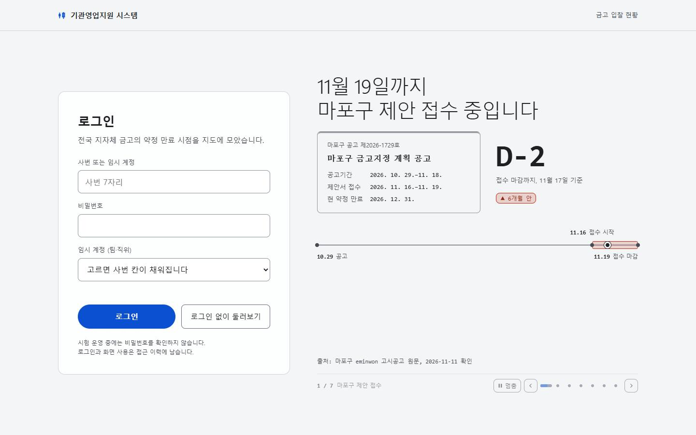
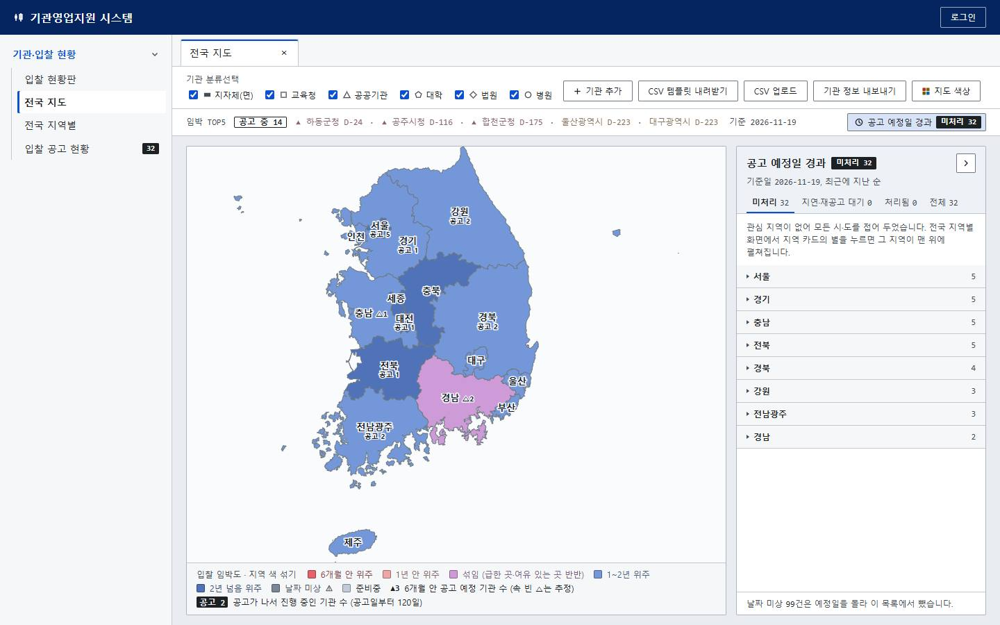
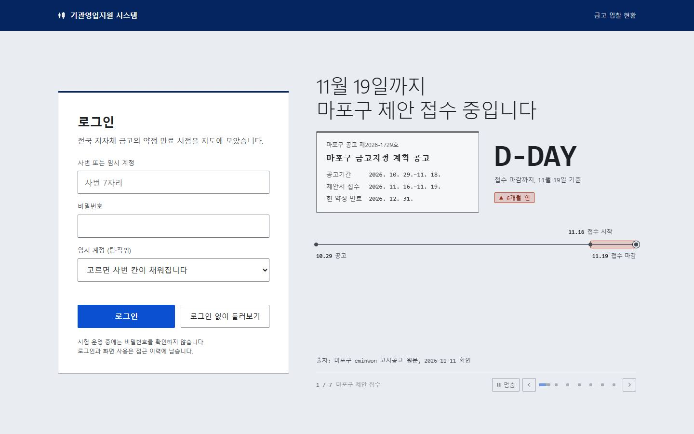
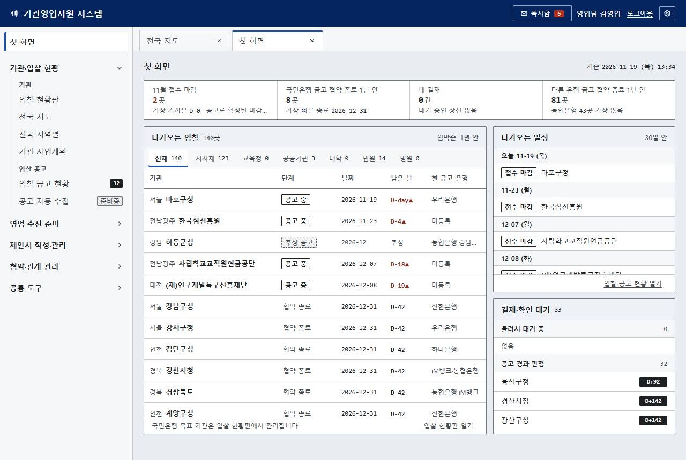
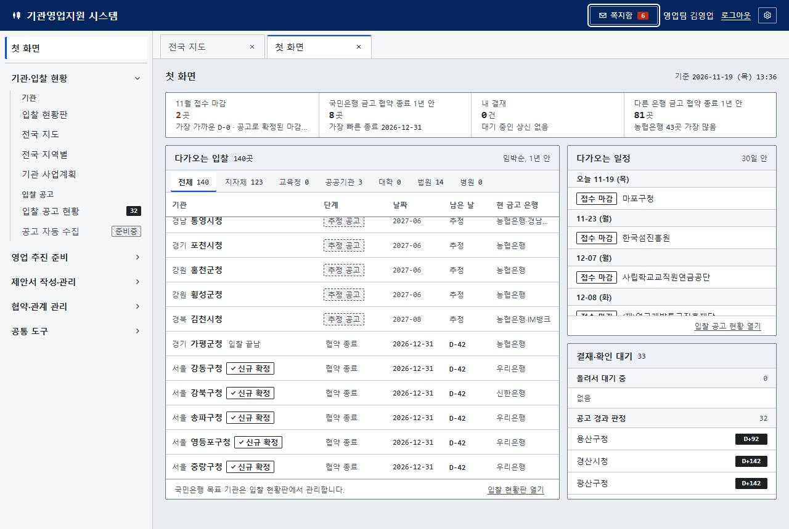
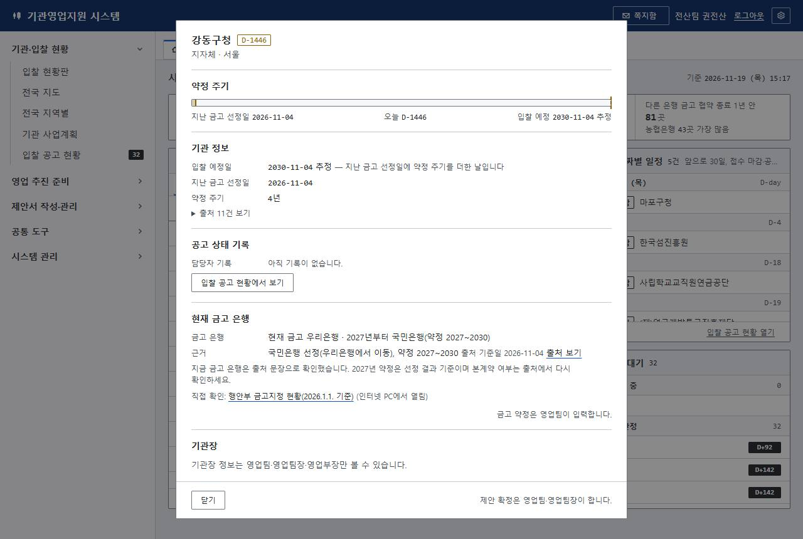
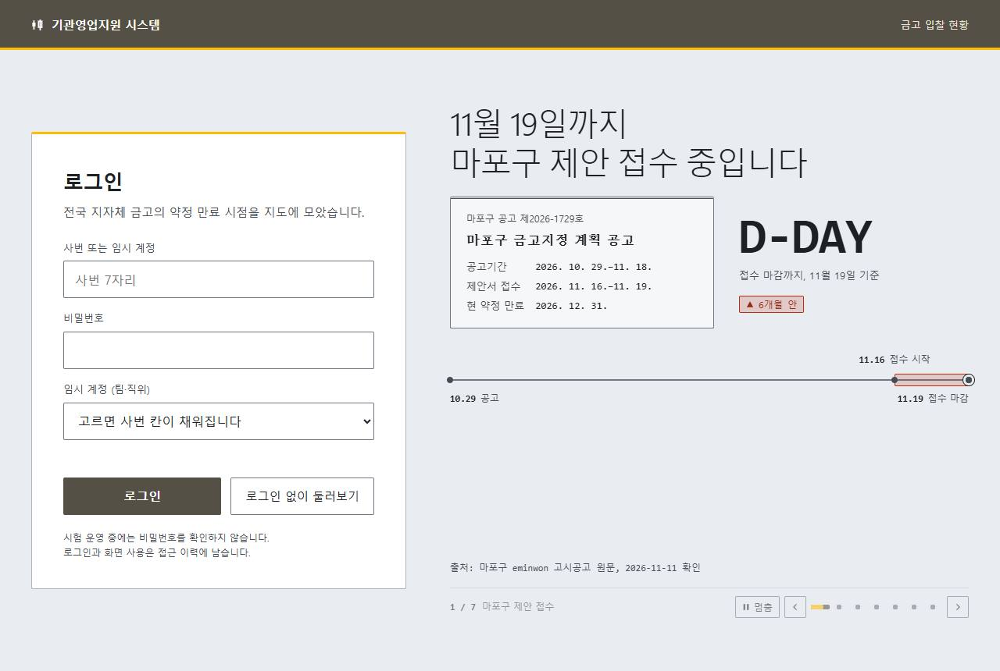

화면 디자인 변경 이력 — 전/후 비교
화면(색·글자·메뉴·화면 구성)이 바뀔 때마다 아래에 전/후를 한 장씩 추가합니다. 디자이너 에이전트(design-reviewer)가 커밋 전에 이 파일에 전/후가 적혔는지 확인합니다. 숫자는 대비 비율(높을수록 잘 보임; 글자 4.5:1·테두리 3:1이 기준)이고, 아래 모의 화면은 실제 화면을 단순화한 그림입니다(정확한 모습은 앱에서 확인).
① 면·테두리·보조글자 색 (2026-11-09, 커밋 53564b2)
패널 #151a22 배경 대비 1.07패널 위 면 #1a2029 패널 대비 1.07가는 선 #232a35 패널 대비 1.21테두리 #2e3745 패널 대비 1.45보조 글자 #8b94a3 패널 대비 5.71버튼버튼
패널 #181e29 배경 대비 1.12패널 위 면 #202835 패널 대비 1.13가는 선 #2d3644 패널 대비 1.37테두리 #424e62 패널 대비 1.99보조 글자 #98a1af 패널 대비 6.41버튼버튼
입력창·선택 상자의 테두리는 3:1 기준을 맞추려고 따로 #626d81(입력 바탕 대비 1.58 → 3.63)을 씁니다. 더 강한 구분이 필요하면 면 #19202b, 테두리 #4a566b 단계로 올릴 수 있습니다.
② 준비중·비활성 흐림 (같은 날)
준비중 항목 글자 대비 2.88 (기준 4.5 미달)
엑셀 바꾸기(비활성) 3.76
준비중 항목 글자 대비 6.41 (배지 11px, 빗금 질감)
엑셀 바꾸기(비활성) 투명도 .45 → .55
같은 방식으로 지도 분류 필터 비활성(3.31 → 읽기 쉬움), 티커 기준일, 쪽지 읽음 행, 퇴직 사용자 행, 작업함 빈 상태도 투명도 대신 색으로 바뀌었습니다.
③ 글자 크기 (같은 날)
경과 패널 안내 문장·작성 줄 주의문·팝업 힌트가 10~11px
지도 범례 제목 10px · 준비중 태그 10px · 숫자 배지 칸 10px
경과 패널 안내 문장·작성 줄 주의문·팝업 힌트가 12px
지도 범례 제목 11px · 준비중 태그 11px · 숫자 배지 칸 11px (지도 SVG 라벨만 10px 유지)
④ 사이드바 메뉴 3단 (같은 날)
28개 항목, 준비중 17개. '이사회 자료'가 '제안 진행·승인' 아래, '질의사항'이 '제안서 작성' 아래에 있어 업무 순서와 맞지 않음.
32개 항목(구현 11, 준비중 21). 영업 기획이 펼쳐진 모습 예시. 소제목은 항목이 2개 이상인 묶음이 2개 이상일 때만 보입니다. AI 대화·지식 검색은 키는 있지만 '준비중'.
⑤ 이사회 자료 작성 화면 (2026-11-09, 커밋 9a1b683)
| 항목 | 48.51 | 36.85 |
|---|
| 항목 | 20.77 | - |
|---|
| 항목 | 48.51 | 36.85 |
|---|
| 항목 | 20.77 | - |
|---|
수익성 분석표 · 파일명.xlsx (팝업, 크게 보기 + 수정)
원본 표 전체 폭 + 오른쪽 편집 영역: "엑셀 파일은 바뀌지 않습니다. 고친 값은 이사회 자료에만 들어갑니다."전체 표 글자: 제목 13 → 15px, 본문 12 → 14px. 화면 폭이 1366px 미만이어도 팝업의 [적용]·알림은 아래에 고정돼 항상 보입니다. 메뉴 이름은 원안 '이사회 자료 작성'으로 유지합니다.
⑥ 버튼·배지 계약 정리 (2026-11-09)
사용자 상태 사용 · 행 버튼 수정잠금퇴직
이사회 값 칸: 48.51 (일반 칸과 거의 구분 안 됨, 1.18:1)
사용자 상태 사용 · 행 버튼 수정잠금퇴직
이사회 값 칸: 48.51 (배경 18% + 왼쪽 막대로 색 말고도 구분)
'사용자 등록'은 관리 화면의 유일한 주행동이라 채운 틸 버튼 예외로 인정(DESIGN.md 등재).
⑦ 공고 예정일 경과 패널·로그인 팝업 1단계 (2026-11-09, 커밋 eff1443·df572e9)
예정일이 지난 건도 지도와 순위 카드에서 일반 건과 같은 모양이었습니다.
경과 건을 따로 보는 곳도, 알림도 없음
전국 지도 옆 경과 패널(360px, 접기 가능, 1366px 미만은 지도 위 서랍) · 항목마다 도장 D+12 ▲ D-30
로그인 직후 팝업(상위 5건, 전체 보기, 오늘 더 이상 보지 않기) · 사이드바에 미처리 건수 배지. 경과는 새 색 없이 잉크 도장, 임박은 빨강 테두리+▲로 색·모양·글자 모두 다름. 도장 글자 대비 15.3:1
⑧ 결재함 메뉴 전원 노출 (2026-11-09, 커밋 317e0b0)
영업팀·전산팀 팀원·디자이너에게 결재함 없음
모든 역할에 결재함이 보임(서버 메뉴 키 8개 불변). 승인 권한이 없으면 '내가 올린 요청'만 쓰고, 승인은 서버가 다시 검사. 묶음이 2개·각 2항목이 되면 소제목이 보이는 것은 규칙대로이며 역할별 실화면은 qa 대기(NEXT 62).
⑨ 예산팀을 '재무팀'으로 표기 (2026-11-09, 커밋 b4ee239)
소속 선택: 영업팀 · 전산팀 · 예산팀 / 직책: 예산팀장
소속 선택: 영업팀 · 전산팀 · 재무팀 / 직책: 재무팀장
로그인·프로필·결재·쪽지·대결자·내 정보·시스템 관리에서 표시만 변경. 쪽지 수신자 목록은 고르면 입력칸에 '예산팀'이 남는 곳이 있어 수정 예정(NEXT).
⑩ 메뉴 이름 정정 (2026-11-09, 커밋 0bbf44a·e7e33f0)
영업 기획 > 질의·부의 > 이사회 부의(비용 승인)
영업 기획 > 대상 분석 > 기관 입찰 요약서
영업 기획 > 질의·부의 > 이사회 자료 작성
영업 기획 > 대상 분석 > 기관 정보 요약서
'이 양식으로 작성' 버튼은 서버의 작성 권한(can_write) 기준으로 보입니다(전에는 수정 권한 기준이라 서버와 어긋났음).
⑪ 기획 승인·이관 게이트 버튼 (2026-11-10, 커밋 cc4d490)
← 목록노원구 ▾▶ 실행 결재자 이름의견(선택) 승인반려
누구나 승인·반려를 누를 수 있었고, 결재자 이름은 손으로 적었습니다(다른 사람 이름도 적을 수 있음). 권한이 없다는 안내도 없었습니다.
← 목록노원구 ▾▶ 실행 의견(선택) 승인반려 승인·반려는 영업부장만 할 수 있습니다.
권한이 없어 처리하지 못했습니다. 영업부장 계정으로 로그인했는지 확인해 주세요.
결재자 입력칸을 없앴습니다. 영업부장이 아니면 승인·반려가 흐려지고 옆에 이유가 나옵니다(화면 읽기 프로그램도 버튼과 함께 읽음). 서버가 거절하면 빨간 오류 줄이 나옵니다. 대비: 안내 글자 약 7.2, 오류 글자 약 6.2, 흐린 버튼 글자 약 4.6(기준 4.5). 문구는 다른 화면과 같은 합니다체이고, 안내는 반려 버튼에도 붙으므로 '승인·반려는'으로 씁니다(NEXT 67 P2-2). 배정 목록의 키보드 포커스 테두리가 좌우로 잘리던 것도 함께 고쳤습니다.
⑫ 제안팀 구성·배정 화면 (2026-11-10, 커밋 138534a·981bc65·b2de603)
아직 제공되지 않는 기능입니다.
할 수 있는 일이 없었습니다. 결재함 카드에는 제목과 사유만 있어서, 결재자가 누구를 바꾸는지 알 수 없었습니다.
전체 · 내 담당 1건
서울 · 검토중 내 담당
담당자 3명 변경 결재 중
| 이름 | 직위 | 배정일 |
|---|---|---|
| 김영업 (나) | 대리 | 2026-11-10 |
담당자 변경 신청
배정 이력 최근 순
담당자 추가 — 배지아 · 결재 반영 · 이영업 자기신고
담당자 변경 신청 — 노원구청 (모달)
해제할 담당자 ☐ · 추가할 담당자 [이름 검색] ☐ · 변경 사유(필수, 0/200) · 취소변경 신청 올리기추가: 배지아(계장)
사유: …
'준비중' 배지가 없어졌습니다. 영업팀장은 1~10명을 골라 배정하고, 담당자·팀장은 사유를 적어 변경을 신청합니다(결재자는 시스템이 정함). 자격이 없으면 버튼 대신 "담당자 변경은 현재 담당자 또는 영업팀장이 신청합니다."가 보입니다. 결재함 카드에 '추가:·해제:' 줄이 생겼고, 받은 결재의 묶음 제목은 '결재 요청'입니다. 새 색 없이 기존 토큰만 씁니다. 대비: 본문 13.4, 보조 글자 6.4, 선택 항목 위 보조 글자 약 5.1(기준 4.5). 후보 행 높이 32px(기준 24px). '변경 결재 중' 배지는 결재 진행 중일 때의 모양입니다. 결재 카드 기관명('노원구')과 목록 기관명('노원구청')이 다른 점은 정리 예정(NEXT 67)입니다.
⑬ 사이드바 메뉴 재편 — 영업 추진 준비·제안서 통합 (2026-11-10)
업무 대분류 6개, 항목 32개(구현 11·준비중 21). 같은 제안서 일을 '관리'와 '작성' 두 대분류에서 찾아야 했습니다.
업무 대분류 5개, 항목 28개(구현 11·준비중 17). 제안팀 구성·배정은 '작성' 소분류로 옮겼습니다. 협약·관계 관리는 항목이 2개라 소제목 없이 보입니다. 긴 이름('제안서 사전준비 프로세스')은 말줄임 대신 어절 단위로 두 줄까지 줄바꿈합니다. 재무·전산팀에 보이던 '팀 간 지원 요청'이 사라졌습니다. 이름은 사용자가 정한 것이고 나중에 다듬습니다.
⑭ 이사회 자료 — 목록에서 시작, 버전으로 저장 (2026-11-10, 020a)
이사회 자료 — 양식을 고르면 문서가 표로 표시됩니다
양식 기본 양식 ▾이 양식으로 작성샘플 워드 내려받기
자료 작성은 업무 수정 권한이 있어야 할 수 있습니다. (작성 버튼과 같은 줄에 함께 표시)
엑셀 바꾸기모든 표 복사초안 워드 내려받기작성 끝내기
영업부장: "이 기능을 쓸 권한이 없습니다."
첫 화면이 '양식 고르기'였습니다. 자료 단위로 들어가는 입구도, 저장도, 이어 쓰기도 없었습니다. 담당자의 [이 양식으로 작성]은 버튼이 보이는 기준(작성 권한)과 실행 기준(수정 권한)이 달라 눌러도 아무 일이 없었습니다.
이사회 자료 담당 입찰 건의 이사회 자료를 만들고 버전으로 저장합니다 양식 보기·편집 새 이사회 자료
검색: 기관명 · 상태 · 담당자 이름 · 연도 1건
| 기관명 | 연도 | 상태 | 담당자 | 마지막 저장 | 버전 |
|---|---|---|---|---|---|
| 노원구 | 2026 | 준비 중 | 윤서준, 김영업, 배지아 | 저장 전 | — |
노원구 2026년 이사회 자료 작성 중
버전 3 · 김영업 11-10 17:24 저장 · 담당 윤서준, 김영업, 배지아
작성 버전 이력 3 작업 이력
영업부장: 모든 자료를 읽기 전용으로 봅니다(버튼 없음). 담당이 아닌 사람: "담당으로 배정된 입찰 건의 이사회 자료만 볼 수 있습니다."
첫 화면이 자료 목록이 됐습니다. 담당자는 [새 이사회 자료]에서 담당 입찰 건과 연도를 고르고, 이미 있으면 버튼이 [자료 열기]로 바뀝니다. 작성 줄의 [작성 끝내기]는 [버전 저장]으로 바뀌었습니다(메모 200자까지, 담당자 모두에게 공유). 다른 담당자가 먼저 저장하면 "다른 담당자가 먼저 저장했습니다."와 함께 [최신 버전 보기] [내 값으로 다시 저장] [내 수정 버리고 최신으로]가 나옵니다. 상태 배지: 준비 중은 회색 글자(7.2:1), 작성 중은 잉크 글자(11.9:1). [버전 저장]은 채운 버튼이 아니라 틸 테두리(7.0:1)이고, 꺼졌을 때 글자 대비는 4.65:1입니다. 새 색은 없습니다. 표 확인·원본 팝업·칸 스포트라이트는 그대로입니다. 양식 화면의 [이 양식으로 작성]과 권한 안내는 지웠습니다. 제출·확정·의결 결과 버튼은 다음 단계(020b)에서 보입니다.
⑮ 이사회 자료 — 제출·결재·확정·의결 결과 (2026-11-11, 020b)
노원구 2026년 이사회 자료 작성 중 (머리에 버튼 없음)
의견(반려 시 사유 필수) 승인반려
제출·회수·의결 결과·재작성 요구 버튼이 없었습니다(서버 기능은 있으나 화면이 그리지 않음). 결재자는 자료 내용을 보지 않고 카드에서 바로 승인했고, 승인 기록의 화면·버튼은 '알 수 없음'으로 남았습니다. 반려 사유는 작업 이력에 "반려되었습니다: "로 비어 보였습니다.
노원구 2026년 이사회 자료 제출(결재 중) 제출 회수
사유 B표 순이익 합계를 본부 확정치로 다시 맞춰 주세요.
자료 보고 결재
확정: 확정 의결 예정 · 12-03 [의결 결과 바꾸기] · 영업부장 [재작성 요구] → 모달에서 사유 1~200자, 확정 자료면 "의결 결과와 개최일이 지워집니다" 경고와 [확정 풀고 재작성 요구].
상태별 버튼이 자료 머리 오른쪽에 생겼습니다(담당자: 제출·회수·의결 결과 / 영업부장: 재작성 요구). 제출하거나 확정되면 작성 줄 자리에 잠금 줄이 나오고, 엑셀·저장·칸 편집은 사라집니다. 반려·재작성 요구로 돌아온 자료는 머리 아래에 사유 배너가 보입니다. 결재자는 결재함 안에서 자료 전체를 읽고, 화면 아래에 붙은 결재 줄에서 승인·반려합니다. 승인·반려·회수는 화면·버튼 이름을 함께 보내 감사 기록이 채워집니다. 대비: 제출 배지 6.0:1, 확정 배지 4.7:1(배경 위), 반환 배너 글자 약 13:1, 주황 막대 7.3:1, 파랑 막대 5.5:1. 새 색은 없습니다. 틸 테두리는 화면마다 '다음 한 걸음' 버튼 하나에만 둡니다. 채운 버튼은 늘리지 않았습니다.
⑯ 제안서 사전준비 프로세스 화면 + 지도 '제안 확정' (2026-11-11, NEXT 70·71)
아직 제공되지 않는 기능입니다.
노원구청
기관구분: 지자체지역코드: 11
구시군코드: 11350
입찰주기: 4
지난 입찰일: …
입찰예상일: …
확정여부: …
경도: 127.05
위도: 37.65
출처: …
수정일: …
편집
사전준비를 시작할 곳이 없었습니다. 팝오버는 기관 요약이 아니라 원본 칸 목록이었고, 지도 오른쪽 기관 카드는 마우스로만 열렸으며 Esc로 닫히지 않았습니다. 현 유치 은행·임직원 수·기관장은 칸 자체가 없었습니다.
노원구청 D-112
지자체 · 서울 노원구입찰 예정일 2027-03-02 (추정)
현 유치 은행 미확인
임직원 수 미확인
기관장 미확인
미확인 칸은 기관 정보 이관 뒤 채워집니다.
제안 확정편집 ▸ 원본 정보 (누락된 칸이 있으면 "누락된 칸: … — [편집]에서 채우세요.")
▣▣□□ 2/4 · 담당 김영업 외 2명
열람 권한 없음
✓ 1 제안 확정✓ 2 개설 승인3 사전준비 2/44 기획승인5 제안서 작성
남은 필수 과제: 수익성 분석표 확정본, 이사회 자료
수익성_v3.xlsx · 개인정보 경고: 이메일 2 확정본으로 지정
제안서 작성하기 필수 과제를 마치고 영업부장 기획승인을 받으면 켜집니다.
사전준비 중단 모달: [닫기] 중단하기 — 되돌릴 수 없는 최종 실행 버튼만 빨간 테두리
사이드바의 '준비중' 배지가 없어지고 이 메뉴는 영업팀·영업팀장·영업부장에게만 보입니다. 지도 팝오버는 기관명·D-day·입찰 예정일을 위에 두고, 현 유치 은행·임직원 수·기관장은 근거가 생기기 전까지 점선 칩 '미확인'으로 보입니다(빈칸·추정값 없음). 원본 칸은 '원본 정보'에 접혀 있고, 빠진 칸은 이름과 고칠 곳([편집])을 알려 줍니다. 영업팀·영업팀장은 [제안 확정]을, 이미 진행 중이면 [사전준비 열기]를 봅니다. 기관 카드는 Tab으로 닿고 Enter·Space로 열며 Esc로 닫으면 카드로 돌아갑니다. 사전준비 화면은 단계 막대 5칸 → 준비 과제 카드 → 끝 노드 [제안서 작성하기]의 '도식'입니다. 과제마다 완료·할 일·잠김·해당 없음·준비중을 글리프와 글자로 함께 보이고, 꺼진 버튼에는 이유가 같은 줄에 붙습니다. 담당자가 아닌 영업팀장·영업부장에게는 "읽기 전용입니다…" 안내가 한 번만 보입니다. 반려·회수된 지난 개설 신청은 신청자·영업팀장·영업부장 밖에는 "지난 개설 신청 N건 · 마지막 반려됨"처럼 건수만 보입니다. 되돌릴 수 없는 [중단하기]만 빨간 테두리이고, 개설 신청 회수는 다시 신청할 수 있어 바로 실행됩니다. 대비: 보조 글자 6.4:1, 완료 파랑 5.4:1, 경고 주황 7.3:1, 부결·위험 빨강 5.6:1, 다음 한 걸음 틸 테두리 7.1:1. 새 색은 없고 채운 버튼도 늘리지 않았습니다. 팝오버 배경은 현 면 색(#181e29 기반)으로 맞췄습니다.
⑰ 입찰 현황판 — 로그인 첫 화면 (2026-11-11, NEXT 77 1단계, a3c6413·0f76c1a)
시·도를 눌러 들어가야 기관 순위가 보임 · 티커에 임박 TOP5 한 줄
로그인하면 지도부터 열렸습니다. "1년 안에 입찰이 있는 곳이 몇 곳이고 어디인가"를 한 화면에서 볼 수 없었고, 제안 확정 같은 다음 행동은 지도 팝오버에만 있었습니다.
확인 6 / 미확인 237
D+ 경과 24 |—D-30—D-90—D-180—1년—| 미상 185
n건
기관 A D-183
기관 B D-256
공고 예정일 경과 n곳 · 기본 펼침
입찰 예정일 · 최근 절차일 · 약정 주기 · 출처
현재 금고 은행 미확인 기관장 미확인
제안 확정전국 지도에서 보기
영업 계열 역할은 로그인하면 입찰 현황판이 열리고, 전국 지도는 메뉴 바로 아래에 그대로 있습니다. 위 띠는 국민은행 약정 기관 수(출처 문장으로 확인된 6곳만, 미확인 수 함께), 1년 시간 눈금(경과·날짜 미상 수를 양 끝에 함께), 진행 중인 제안 수입니다. 왼쪽은 입찰 예정일이 가까운 순서의 기관 목록과 경과 묶음(기본 펼침, ↑↓ 이동·Enter 상세)이고, 오른쪽은 기관 정보·출처와 지도 팝오버와 같은 [제안 확정]·[사전준비 열기]입니다. 현재 금고 은행·기관장은 근거가 생기기 전까지 점선 칩 '미확인'으로 두고 값을 만들지 않았습니다. 숫자는 a3c6413 시점이며, 같은 날 기관 데이터 최신화(NEXT 14·30-1, 824b0e7~4a34cb6) 뒤에는 1년 안 16 · 경과 10 · 미상 112입니다. 대비: 보조 글자 6.4:1, 임박 빨강 5.6:1, 주황 7.3:1, 다음 한 걸음 틸 테두리 7.1:1, 경과 도장 약 14:1. 글자 크기는 11~16px 안이고, 새 색과 채운 버튼은 없습니다.
⑱ 지도 지역 색 섞기 — 바닥 섞기 + ▲개수 (2026-11-11, NEXT 78)
면 색 = 그 지역 지자체 레코드 중 가장 임박한 1건의 5색(빨·주·노·파·회 파스텔). 다른 종류 기관은 색에 들어가지 않았고, 면에는 이름·포커스·키보드 진입이 없었습니다(클릭만).
6개월↓ 1년↓ 2년↓ 2년+ 미상
6개월 안 위주 1년 안 위주 섞임 1~2년 위주 2년 넘음 위주 날짜 미상
서울 ▲4 · 강원 ▲2 · 충남 △1(모두 추정) — 지역 이름 옆에 6개월 안 기관 수.
켠 종류의 기관을 모두 섞어 5단으로 칠합니다(6개월 안·경과 +2, 6~12개월 +1, 1~2년 −1, 2년 넘음 −2, 미상 제외의 평균). 1년 안 기관이 하나라도 있으면 보라보다 파랑 쪽으로 내려가지 않고, 급한 곳은 색이 아니라 ▲n이 알립니다. 지역에 마우스를 올리거나 Tab으로 닿으면 "가장 임박 ○○ · 6개월 안 n · 6~12개월 n · 1~2년 n · 2년 넘음 n · 날짜 미상 n곳은 색에 넣지 않음" 툴팁이 뜨고, Enter·Space로 들어갑니다. 구를 누르면 기존처럼 그 구의 지자체가 열립니다. 위쪽 알림 띠는 기존 크롬 색을 유지하고, 지도 위 표식만 새 팔레트를 씁니다. 테마 창의 지도 색은 6개(5단+미상)로 바뀌었고, 사용자가 직접 바꾼 옛 색은 끝점으로 이어받습니다. 지금 데이터(지자체만)로 시도 16곳 중 보라 11·파랑 2·진파랑 3. 대비(바탕 #0f1218): 5.6 · 9.6 · 8.3 · 6.4 · 4.0 · 5.1:1(손계산 근사, 실측 예정).
⑲ 입찰 현황판 재설계 — 월별 막대·기간 버튼 + 사이드바 하나만 열림·기억 (2026-11-11, NEXT 77)
확인 6 / 미확인 237
|—▮——————▮▮▮▮▮—| (3px 틱이 겹침)
n건
기관 A D-18
…11px 행이 빽빽
(넓은 칸이 비어 있음)
현황판 글자 1,155자 중 11px 875자(76%). 목록 360px 고정, 상세 칸은 미선택 때 12px 한 줄. 기간은 1년 고정. 목록에 가로 스크롤바 버그(scrollWidth 351 > 348). 사이드바 펼침 표시는 11px 글자 ▸였고 화면낭독기가 "기관·입찰 현황 ▸"로 읽었으며, 열림 상태는 기억하지 않았습니다.
경과 n곳
1년 뒤 n곳
날짜 미상
3개월6개월1년전체
기관 A D-18
6개월 뒤 1년 안에 n곳이 더 있습니다. [1년으로 넓히기]
약정 주기 막대: 최근 절차일 ━━━━━━━┊ 입찰 예정(추정)
기관 정보 · 현재 금고 은행 · 기관장(근거 없으면 '미확인')
제안 확정전국 지도에서 보기
제안 진행 단계
확정 ▬ · 개설 승인 대기 ▬ · 사전준비 ▬ · 기획승인 대기 ▬ · 작성 ▬
맨 위 전체 폭에 월별 입찰 예정 막대(이번 달부터 13개월, 높이 분모 최소 4). 아래는 목록 400px | 상세 | 오른쪽 기둥 380px(국민은행 금고 약정 와플: 칸 하나가 기관 하나, 제안 진행 단계 5줄), 1280~1599px에서는 기둥이 위로 올라갑니다. 기간 버튼(3개월·6개월 기본·1년·전체)은 지도 색 경계와 같은 일수(91·182·365일)를 쓰고 마지막 선택을 기억하며, 기간 밖 기관은 "n곳이 더 있습니다 [넓히기]"로 알립니다. 약정 만료일에서 추정한 날짜는 "(추정·약정 만료 기준)"으로 구분합니다. 글자는 목록 이름 14px, 메타 12px, 상세 제목 16px, 패널 제목 15px/700, 11px은 축 눈금·배지만. 사이드바는 한 번에 하나만 열리고(사용자 결정 11-11), 사용자가 직접 펼치거나 접은 상태를 사번별로 기억합니다(화면 이동은 저장하지 않음). 펼침 표시는 12px 그림 화살표(0.2초 회전)이고 접힌 분류 옆에 경과 미처리 수를 보여 줍니다. 대비(바탕 #181e29): 보조 글자 6.4:1, 빨강 5.6:1, 주황 7.3:1, 틸 창 경계 7.1:1, 와플 확인 칸 13.4:1, 미확인 칸 테두리 3.2:1. 새 색과 채운 버튼은 없습니다(모의 그림은 단순화, n은 그날 자료에 따름).
⑳ 로그인 화면 — 왼쪽 고정 카드 + 오른쪽 슬라이드 재생 (2026-11-11, 시안 B-3)
사번 [__________]
비밀번호 [__________]
임시 계정 [▼]
로그인둘러보기
380px 카드, 제목 18px(예외로 문서화되지 않음). 두 버튼이 같은 모양이라 주행동이 보이지 않았습니다. 배경 그림은 제품과 관계가 없었고, 실패 문구에 aria-live가 없었습니다.
전국 지자체 금고의 약정 만료 시점을 지도에 모았습니다.
사번 또는 임시 계정 [______]
비밀번호 [______]
임시 계정 (팀·직위) [▼]
로그인둘러보기
11월 16일,
마포구 제안 접수가 열립니다
마포구 금고지정 계획 공고
제안서 접수 2026. 11. 16.–11. 19.
접수 시작까지
▲ 6개월 안
출처: 마포구 eminwon 고시공고 원문
왼쪽 카드(폭 480px, 제목 "로그인" 26px, 틸 알약 주버튼 하나)는 고정이고, 오른쪽은 6초마다 계속 반복해 넘어가는 슬라이드입니다: 접수 일정(마감 뒤 자동 제외)·국민은행으로 옮겨 온 구·다시 고른 구·서울 임박 지도·탐지→결재 흐름, 그리고 법원·공공기관·대학·병원은 지도 대신 '다가오는 일정 띠'(6개월 안 입찰 자동 계산)와 '기관 카드 묶음'. 조작 줄은 슬라이드 아래에 작고 흐리게 두고 마우스·키보드가 들어오면 또렷해집니다. 마우스·포커스·탭 숨김·움직임 줄이기 설정에서 멈춥니다. 로그인 화면이 떠 있는 동안 뒤 화면은 키보드로 닿지 않습니다(inert). 대비(계산값): 본문 15.1:1, 보조 글자 7.2:1, 주버튼 글자 8.0:1, 포커스 링 약 8:1, 보조 버튼 테두리 3.3:1, 꺼진 점 3.6:1. 모의 그림은 단순화했고 장 수·D-n은 날짜에 따라 바뀝니다.
㉑ 공고 진행 중 표시 — 지도 '공고 n'·현황판 '지금 공고가 난 기관' 띠, 색 섞기 평균만 (2026-11-12, NEXT 78·77)
지도: 1년 안 기관이 하나라도 있으면 최소 보라 → 시도 16곳 중 대부분 보라, ▲ 합계에 예정일이 지난 기관도 포함(현황판 '6개월 안 3곳'과 불일치). 필터는 옛 이름(공공기관·공기업·대학병원·대학교), 지자체만.
현황판: 맨 위 '월별 입찰 예정' → 목록|상세. 목록이 칸 안에서 스크롤되지 않아 칸 높이 약 2,000px, 상세 안내문은 첫 화면 밖. 마포구청은 경과 목록 'D+14 · 공고가 났는지 확인이 필요합니다'.
지금 공고가 난 기관 접수 마감 전 5곳 · 결과 확인 9곳 — 마감 D-4 송파문화재단 · 마감 D-7 마포구청(접수 11.16~11.19) · 섬진흥원 D-11 · 사학연금 D-25 · 연구개발특구 D-26
지도: 서울 공고 5(라벨 둘째 줄) · ▲는 6개월 안 '예정'만. 필터 5종(지자체·공공기관·대학·법원·병원), 비지자체 168곳 합침.
지도 색은 평균 점수만(바닥 규칙 뺌)으로 대부분 파랑, 경남 보라. 예정일이 지난 기관은 색·▲에서 빼고 '공고 예정일 경과' 목록에서 관리. 확정 공고이고 공고일부터 120일 안이면 '공고 진행 중': 접수 마감 전과 마감일 미확인(공고 후 30일 이내)만 급함(+2·빨강 카드), 마감이 지났거나 30일 넘은 미확인은 무채색 '공고 후 n일 · 결과 확인'. 120일을 넘긴 확정 공고는 경과 목록에서 '공고 후 n일 · 결과 미확인'. 현황판 목록·상세 높이는 clamp(440px, 100vh−140px, 820px)로 고정해 안에서 스크롤하고, 처음 열면 마감이 가장 가까운 기관을 자동 선택(포커스는 옮기지 않음). 상세 맨 위 '공고 진행' 절: 공고일→오늘→접수 창→약정 만료 막대, 공고번호, 공고 원문 링크(옆에 '(인터넷 PC에서 열림)'). 빨강 글자 대비 5.56:1, 빨강 틴트 위 본문 12.1:1(design-reviewer 계산값). 1366×768·1920 폭은 미확인.
㉒ 기관장 카드 1단계 — 현황판 상세 '기관장' 절을 서버에 연결 (2026-11-12, NEXT 77)
상세 칸 '기관장' 절: 미확인 자리표시 한 줄 — '기관장 프로필은 수집 예정입니다'.
임기 3년 7개월 출처: 중앙선관위 당선인 정보 · 2026-11-02 확인 — 사진(또는 실루엣) · 이름 · 직위 · 권한대행 · 첫 취임일·현 임기 시작·임기 만료(각 출처) · 학력·경력 · 후보 n건 배지
기관장이 없으면 '아직 등록되지 않았습니다 — 공개 자료를 확인해 출처와 함께 등록하세요 [기관장 추가]'.
편집 창: 확정 대기 후보(근거 항목·출처 요약), 확정된 항목, 사진(이용 조건 공공누리 1유형·기관 허락 중 선택 필수, jpg/png 5MB), 항목 추가(종류 8가지·값·출처). 기각·무효·기관장 교체 확정은 창 안 2단계 확인. 사진은 서버가 다시 만든 JPEG를 받아 보여 주고, 무효 처리하면 서버가 바로 앞 사진으로 되돌립니다. 공고 진행 중 기관은 임기를 모르면 '마감 D-n' 또는 '공고 진행 중'. 서버에 등록되지 않은 기관(비지자체 묶음 자료)은 '서버에 등록된 기관만 관리합니다'. 열람·입력·확정·기각·무효·사진은 누가·어느 화면(head_card)·어느 버튼인지 모두 기록되며, 목록을 훑을 때 기록이 쌓이지 않게 선택 뒤 0.4초 멈출 때만 읽습니다. 로그아웃·계정 전환 시 카드를 비웁니다. 실화면 확인은 '기관장 없음'·편집 창까지(등록된 기관장 0건이라 카드 자체는 미확인).
㉓ 기관장 카드 — 이름까지 무효면 '기관장 없음', 날짜 출처는 각주 한 줄 (2026-11-13, NEXT 77)
모두 무효 처리 뒤: 사진 실루엣 · 이름 미확인 직위 미확인 · 날짜 3칸 미확인 — [기관장 추가] 없음. 이 상태에서 새 기관장을 넣으면 서버가 '팀장 확정 대기 후보'로만 받음.
날짜 칸: 2022-07-01 출처: 기관 누리집 · 시험용 출처 · 확인 2026-11-13 ×3 칸 반복.
'확정된 기관장 정보가 없어 새로 추가할 수 있습니다. 공개 자료를 확인해 출처와 함께 추가하세요.' [기관장 추가] (확정 대기 후보가 있으면 [확정 대기 후보 n건 보기]도)
편집 팝업 안에서 마지막 확정 항목을 무효하면 팝업을 닫지 않고 같은 자리에서 '기관장 등록' 양식으로 바뀌고 이름 칸에 커서가 갑니다. 등록하면 '기관장을 등록했습니다'(바로 확정).
날짜 칸: 2022-07-011 · 2022-07-011 · 2026-06-301 — 아래 한 줄 '1 출처: 기관 누리집 · … · 확인 2026-11-13'. 출처가 다르면 1·2로 나눔.
권한대행 '아니오'는 카드에 안 보이는 값이라 판정에서 뺍니다. 빈 기관장에는 항목 추가·사진 올리기·사진 복원이 막히고(409) [기관장 추가]로만 채웁니다. 실화면: 마포구청 로컬 시험 데이터로 무효→기관장 없음→팝업 등록→바로 확정·각주 확인.
㉔ '기획승인' → '사전준비 승인'(사전준비 쪽만), 기관장 무효 버튼은 서버 판정대로 (2026-11-13)
사전준비 단계 막대 '4 기획승인 · 영업부장', 버튼 [기획승인 요청], 상태 '기획승인 중', 현황판 범례 '기획승인 대기', 결재함 유형 '사전준비 기획승인'.
기관장 팝업: 값을 넣은 사람이면 팀장이 확정해 준 값에도 [무효 처리]가 보임.
'4 사전준비 승인 · 영업부장', [사전준비 승인 요청], '사전준비 승인 중', '사전준비 승인 대기', 결재함 유형 '사전준비 승인'. 진행 현황의 '기획승인'은 그대로.
기관장 팝업: 본인이 넣고 본인이 확정한 값(사진은 본인이 올린 것)에만 [무효 처리], 팀장·부장은 모두. 막히면 '그 밖에는 영업팀장·영업부장에게 요청하세요'.
상태·이력 이름은 DB 코드표(028)에서 오므로 로컬 MySQL에 028을 적용해야 화면 전체가 새 이름이 됩니다. 이미 올라간 결재 제목·지난 이력은 감사 기록이라 바꾸지 않습니다. 단계 막대·범례 라벨이 길어져 좁은 폭 확인은 디자인 후속.
㉕ 지도 요약 카드·순위표도 '공고 진행 중'으로, 기관장 팝업은 '추가'로 통일 (2026-11-13, NEXT 78·77)
지도 요약 카드: 마포구청 D+15 · 입찰 예정일 2026-10-29 (확정) · 기관장 미확인. 순위표: 지자체 · 2026-10-29(확정).
기관장 팝업(기관장 없음): 제목 '기관장 정보 편집', 맨 위 '확정 대기 후보 0건', 절 '기관장 등록', 버튼 [등록].
지도 요약 카드: 마포구청 마감 D-6 · 공고 진행 2026-10-29 · 접수 11.16~11.19 · 기관장 현황판에서 확인. 순위표: 지자체 · 공고 2026-10-29 · 접수 11.16~11.19. 마감일 모르면 '공고 진행 중', 마감 지나면 '결과 확인'.
기관장 팝업(기관장 없음): 제목 '기관장 추가', 후보가 없으면 후보 절 숨김(양식이 맨 위), 절 '기관장 추가', 버튼 [추가], 성공 '기관장을 추가했습니다.'. 팝업 안에서 기관장이 생기거나 없어지면 제목도 함께 바뀝니다.
지도 요약 카드의 기관장 줄은 서버 카드와 연결하지 않았습니다 — 지도를 훑을 때마다 열람 기록이 쌓이기 때문입니다(연결은 버튼을 눌렀을 때만 하는 방식으로 기획 판단 필요). 실화면 확인: 서울 확대 → 마포구청 순위표·요약 카드.
㉖ 지도 요약 카드에 [기관장 보기] — 눌렀을 때만 불러옴 (2026-11-13, 사용자 결정 가)
요약 카드 기관장 줄: 현황판에서 확인 (정보 없음)
기관장 줄: [기관장 보기] 열람 기록이 남습니다 → 누르면 '가상시험인둘 구청장 · 임기 만료 136일 지남 · 만료 2026-06-30 · 출처: 기관 누리집 … · 현황판에서 자세히 확인하세요.', 버튼은 [다시 불러오기]로.
영업팀·영업팀장·영업부장, 서버에 등록된 기관만 버튼이 보입니다(그 밖에는 '현황판에서 확인' 그대로). 사진은 부르지 않고, 결과는 카드를 닫거나 다른 기관을 고르면 버립니다. 열람 기록은 화면 map_popover · 버튼 head_view로 현황판 카드 열람과 구분됩니다. 실화면: 누르기 전 요청 0건, 누른 뒤 1건.
㉗ 지도에서 기관을 누르면 '입찰 현황판' 상세가 팝업으로 (2026-11-13, 사용자 결정)
순위표·기관 표식 클릭 → 작은 요약 카드(폭 280px): 배지 · 공고 진행 한 줄 · 현 유치 은행/임직원 수 미확인 · [기관장 보기] · [제안 확정] [편집] · 원본 정보.
현황판·새 팝업 모두 [제안 확정]이 숨어 있었음(계정 로그인 여부를 넘기지 않아서).
클릭 → 가운데 팝업(폭 720px, 화면 안 스크롤): 기관명·마감 D-6 / 공고 진행 막대·공고 번호·원문 링크(인터넷 PC에서 열림) / 기관 정보 / 현재 금고 은행 / 기관장 카드(임기 3년 7개월 남음·실루엣·이름·날짜 3칸·학력·경력·출처) / 원본 정보 / 아래 줄 [제안 확정] [편집] [닫기].
ESC·[닫기]·바깥 클릭으로 닫히고 누른 카드로 포커스가 돌아갑니다. [편집]은 팝업을 닫고 기관 편집 창을 엽니다. [제안 확정]→확정하면 사전준비 화면으로 이동. 기관장 열람 기록은 화면 map_popover로 남습니다(기관을 직접 고른 화면이라 현황판처럼 자동 조회). 실화면: 서울 → 마포구청(실데이터 유동균 구청장).
㉘ 지도 [기관장 보기] 24px, 지도 상세 팝업 제목 링 없앰, 기관장 사진 안내 한 줄 (2026-11-15, design 11-13 P2)
[기관장 보기] 높이 약 20px (안쪽 여백 위아래 1px·좌우 8px, 글자 12px)
지도 상세 팝업이 열리면 제목 '마포구청' 둘레에 2px 틸 테두리 상자
사진 칸 아래: '사진 없음. 공공누리 제1유형 사진이나 기관이 허락한 사진만 올릴 수 있습니다.' (1280폭에서 약 4줄). 화면 낭독기는 '사진 없음'을 두 번 읽음(그림 이름 + 안내문)
[기관장 보기] 높이 24px 이상 (여백 위아래 3px·좌우 10px, 글자 12px 그대로)
지도 상세 팝업 제목에 상자 없음. 포커스는 그대로 제목에 가서 화면 낭독기가 기관명을 먼저 읽고, Tab을 누르면 버튼부터 링이 보입니다.
사진 칸 아래: '사진 없음' 한 줄. 실루엣 그림은 장식으로 두어 낭독기는 한 번만 읽습니다.
사진 이용 조건(공공누리 제1유형이거나 기관이 직접 허락한 사진)은 사진을 올리는 편집 팝업 '사진 올리기' 절에 그대로 있습니다. 입찰 현황판에서 목록 → Enter로 상세 제목에 갈 때는 위치를 알려 줄 단서가 링뿐이라 링을 남겼습니다. 현황판의 '마감 D-n'·'공고 후 n일' 칩과 둘째 줄 글자는 그대로입니다(시험으로 확인). 수치는 CSS 계산값입니다(Playwright 브라우저가 다른 세션에 잡혀 실측 못 함).
㉙ 기관 정보 변경 창을 세 묶음으로, 확정 날짜에 출처, '개원 확인 필요' 모음 (2026-11-15, NEXT 72)
폭 360px 창에 13칸이 한 줄로 쌓임. 1280×800에서 내용 665px가 보이는 525px를 넘어 스크롤됨. 저장 버튼은 맨 아래 하나.
'입찰예상일' 칸과 '확정여부' 체크(이 PC에만 저장되고 서버로는 안 감)가 따로 놂. 공고가 있는 기관은 칸에 공고 날짜가 들어가 있었음.
저장 실패 시 브라우저 팝업 '서버 저장 실패 (400)'만 뜨고 이유·고칠 곳이 없음.
아래 안내문: 'sources는 쉼표로 구분, 1개 이상 필수(조작 금지)' (내부 이름 노출). 창에 대화상자 표시(role)가 없어 화면 낭독기가 창으로 알지 못하고, Esc로 닫히지 않음.
폭 560px, 두 칸씩. 제목 '기관 정보 변경' 아래 '마포구청 · 지자체 · 서울'. 묶음 셋, 묶음마다 저장 버튼: 입찰 예정일 / 운영 상태(법원·개원 예정 기관만 펼침, 나머지는 '운영 상태: 운영 — 바꿀 때만 펼치세요'로 접힘) / 기본 정보.
입찰 예정일 칸은 기관의 원래 값(마포구청 2026-10-29)으로 채워짐. 공고가 있으면 '반입된 공고가 있어 지도·현황판에는 공고 날짜 …가 보입니다' 한 줄. 날짜 근거 [추정] [공고로 확정]. 확정을 고르면 '공고 링크 / 공고 번호' 칸이 나오고, 필요할 때 '(필수)'와 그 이유(예: '날짜를 바꾸면 현재 출처는 이어지지 않습니다.')가 붙음.
출처 없이 확정 저장 → 칸 바로 아래 '확정하려면 출처(공고 링크 또는 번호)가 필요합니다.'(대비 7.7:1), 두 칸 빨간 테두리, 서버로는 아무것도 보내지 않음. 바뀐 것이 없으면 저장 버튼이 꺼져 있음.
현황판·지도 상세의 확정 날짜 옆에 '출처 g2b.go.kr (인터넷 PC에서 열림) · 공고 번호 …'. 출처가 없는 옛 확정은 점선 칩 '출처 미기록'. 개원 예정일이 지난 법원은 현황판 목록 아래 '개원 확인 필요 n곳'(주황 글자 7.3:1)에 모이고, 상세에는 [제안 확정] 대신 [기관 정보 변경]이 있음.
창은 화면 낭독기가 대화상자로 읽고, 열면 입찰 예정일 칸에 커서가 가고, Tab은 창 안에서만 돎. Esc·[닫기]로 닫을 때 저장 안 한 묶음이 있으면 '저장하지 않은 변경이 있습니다: 입찰 예정일.' [버리고 닫기][계속 편집]이 뜸. 수치는 1280×800 실측(메인 헤드리스, 저장은 누르지 않음)과 색 토큰 계산값. '개원 확인 필요'는 지금 로컬 데이터에 해당 기관이 없어 코드로만 확인함. 출처 없이 확정이던 9곳 중 8곳은 공고 번호(메모·원문)를 출처로 채워 확정 유지(사용자 답 ⓑ), 용산은 번호가 없어 추정.
㉚ 기관 종류 5종 → 6종(교육청 분리), 지도 마커 모양을 종류에 맞춤 (2026-11-15, NEXT 82)
분류 선택 5칸: 지자체(면)·공공기관 ▲·대학 ⬟·법원 ◆·병원 ●. 시도 교육청 16곳은 공공기관 칸에 섞임.
지도: 교육청 16곳·지방공기업 8곳이 ◆(법원 모양). '법원'을 꺼도 ◆ 24개가 남음. 종류를 모르는 유형도 ◆라 법원과 구별 안 됨.
분류 선택 6칸: 지자체(면)·교육청 ■·공공기관 ▲·대학 ⬟·법원 ◆·병원 ●, 기본 전부 켬. 1280폭에서 한 줄 유지(약 436 → 527px), 상단 띠 높이 그대로.
지도 마커를 종류 기준으로 그려 칸을 끄면 그 모양이 정확히 사라짐. ◆는 법원뿐(법원을 껐을 때 남는 ◆ 24 → 0). 종류를 모르는 유형은 가로 막대.
재단법인(송파문화재단 등)은 공공기관 ▲ 그대로 — '기타' 칸은 없음. 새 색 0개(마커 색은 임박도 색 그대로). 수치는 design-reviewer 1280×800 실측·계산값.
㉛ 경과 팝업 버튼 — 현황판 위에서는 현황판 안으로 (2026-11-16, design 11-16 P1-2)
현황판 위에 뜬 로그인 경과 팝업 아래 줄: [오늘 더 이상 보지 않기] … [닫기] [경과 패널에서 전체 보기] → 누르면 지도 화면으로 이동해 경과 패널을 엶. 안내 줄은 '외 n건은 경과 패널에서 볼 수 있습니다.'
현황판 위에 뜬 팝업: [닫기] [현황판에서 경과 건 보기] → 팝업이 닫히고 같은 화면의 [공고 예정일 경과] 묶음이 펼쳐지며 그 목록에 포커스가 감(지도로 이동 1회 → 0회). 안내 줄도 '외 n건은 현황판의 [공고 예정일 경과]에서 볼 수 있습니다.'
지도 위에 뜬 팝업(디자이너·마스터 등)은 [경과 패널에서 전체 보기] 그대로.
버튼 글자 수가 같아(10음절) 버튼 폭은 그대로입니다. '처리'라는 말은 쓰지 않았습니다(상태 기록 기능이 생기기 전). 현황판이 지금 보이는지는 열 때와 누를 때 두 번 확인해, 열린 뒤 화면이 바뀌어도 버튼이 헛돌지 않습니다. 경과 목록은 이후 '입찰 공고 현황'으로 옮길 예정이라(11-16 역할 재정의) 그때 목적지가 다시 바뀝니다.
㉜ 지도 범례를 판 아래 띠로 — 범례가 면을 덮지 않게, 순위 카드 한 번=소재 구 반짝 (2026-11-16, 사용자 요청·design 11-16 A안)
순위 카드를 한 번 누르면 바로 기관 상세 팝업이 열림. 법원·교육청 등은 좌표·소재 구가 없어 지도에 아무 표시가 없음.
범례: 지도 판 오른쪽 아래 블러 유리 상자(343×216, 판 면적 21%). 서울 서초 97%·강남·송파 100% 덮임, 경기 12개 시군구 90% 넘게 덮임, 경남 거제 100%. 공고 칩 글자 10px.
순위 카드 한 번 = 지도에서 반짝(지자체는 그 면, 법원·교육청 등은 소재 구 면), 두 번(또는 Enter) = 기관 상세 팝업. Tab으로 카드에 닿아도 반짝. 서울 지자체 외 19곳 소재 구를 공식 누리집 주소로 대조해 채움.
범례: 판 아래 띠(2~3줄, 높이 53~72px)로 붙고 지도는 그 위 남은 높이에 맞춰 그림 — 덮이는 면 0곳, 서초 반짝임이 온전히 보임. 지도 높이는 전국 약 10%, 드릴인 약 14% 줄어듦. 공고 칩 10 → 11px.
새 색 0개(구분선은 --line 토큰). 범례 띠 높이가 첫 렌더 뒤 늘면 지도를 한 번 다시 맞춤(전국 지도 아래 6px 잘림 해소). 수치는 design-reviewer·메인 1280×800 실측.
㉝ 기관 사업계획 — '준비중' 안내에서 목록|상세 2단 화면으로 (2026-11-16, design 11-16 보충 A~G)
사이드바 '기관' 아래: 입찰 현황판 / 전국 지도 / 전국 지역별 / 기관 사업계획 준비중
기관 사업계획
아직 제공되지 않는 기능입니다. 순서대로 준비하고 있습니다.
현황판·지도의 기관 상세에도 사업계획 자리가 없었습니다.
사이드바: 기관 사업계획 (배지 없음 — 실제 화면이 열림). 영업 계열에게 보입니다.
┌ 입찰 임박 기관 (380px) ─────┐┌ 상세 ───────────────────────────────┐ │[3개월|6개월|1년|전체] ││ 서초구 [사업계획 24건][오래됨] │ │[모두|자료 있음|자료 없음] ││ 반입 2026-11-16 · 서울 25구 원문에서 옮김│ │[기관명 검색 ][지역 ▾] ││ [사업명·내용에서 찾기 ] │ │6개월 안 40곳 · 자료 없음 30곳 ││ 민선8기 실천계획 [공약이행][기간 지남]│ │ 서초구 D-41 ││ 출처 4개년계획 · 실천계획 · 확인 │ │ 서울 · 2027-01-02 ││ 2025-02-10 [원문 문서] │ │ [사업계획 24건][오래됨] ││ │ │ 노원구 D-77 ││ 번호 사업명 예산(백만원)│ │ [자료 없음] ││ 3 청년 창업 3,400 │ │ 목록에 담을 수 있는 기관 30곳 ││ 계산값 │ │ · [목록 내려받기(CSV)] ││ 3-2 공간 조성 [폐기] 예산 미기재 │ │ ││ 4 인지건강 268+32 (원문 표기) │ └────────────────────────────────┘└──────────────────────────────────────┘
사용자 결정(11-16 오후): 신뢰도를 떨어뜨리는 표시를 뺍니다 — 원문 쪽수 칸·'미확인'·'미조사', 그리고 우리 쪽 홈페이지 검색 결과(확인됨·부분확인·확인안됨) 전부. 숫자 하나로 정할 수 없는 예산은 '확인안됨' 대신 원문 표기를 그대로 보입니다(예: 268+32 (원문 표기)). 출처 URL이 없으면 '원문 문서', 금액이 없으면 '예산 미기재'.
배지는 테두리 모양으로 뜻을 나눕니다: 점선 = 아직 확인 못 함(자료 없음·확인안됨), 실선 외곽 = 사실로 끝남(기간 지남·폐기), 주황 = 다시 확인할 때(오래됨, 확인 12개월 넘음), 중립 = 종류 이름(공약이행·사업계획 N건·원문 문서 — 웹 주소 없이 원문 문서만 있는 자료). 빨강은 쓰지 않습니다.
폐기 사업은 지우지 않고 글자만 보조색으로 낮춥니다(취소선·흐림 없음, 대비 약 6.4:1 유지). 원문의 '-'·빈칸은 0이 아니라 '예산 미기재'(칩 없는 글자)·'확인안됨'으로 보입니다. 상위사업의 합계는 하위 단위가 모두 같을 때만 '계산값' 표시와 함께 보입니다.
현황판·지도의 기관 상세에 '사업계획' 절이 생겼습니다: [사업계획 24건][오래됨] · 확인일 · [사업계획 24건 보기] → 이 화면이 그 기관을 골라 열림(이 화면을 열 수 있는 사람에게만 버튼이 보임).
새 색 0개(토큰만), 글자 11~16px. 목록은 키보드 ↑↓·Home·End로 고르고 Enter로 상세 제목에 포커스. 사업표는 열·분야 머리와 낭독용 표 제목을 갖추고, 예산 칸은 '하위사업 합계 계산값 3,400 백만원'처럼 읽힙니다. 880px 이하에서는 위아래 1단. 화면을 열어 보지 못해 수치는 CSS 계산값입니다(Playwright 연결 실패). 그림의 기관·숫자는 모양 설명용 예시입니다.
사업표 열 폭 고정 (2026-11-16 오후, 사용자 지적 "사업명과 예산 사이가 너무 멀다" — design·qa 11-16)
전 (1280폭 실측: 번호 52 · 사업명 92 · 예산 388px) 후 (1280폭 실측: 번호 64 · 사업명 308 · 예산 160px) │1 공공시설 유 718│ │1 공공시설 유휴공간 등을 활용한 창업 718│ │ 휴공간 등을 │ │ 보육공간 및 테스트베드 구축 │ │ 활용한 창업 │ │9 창동 전략산업 인프라 조성 별도 합계 649,│ │ …(이름이 한 글자씩 접힘) │ │ 추진 112백만원(10~12│ │9 창동 전략 별도 합계 649,112백만원(…원문 표기)│ │ …(원문 표기) │
원인: 예산 칸이 줄바꿈 금지(nowrap)여서, 원문 표기 문구가 긴 행 하나(도봉 1-9, 40자)가 그 표의 예산 열 전체를 388px로 넓혔습니다. 짧은 금액도 그 넓은 열 오른쪽 끝에 붙어 사업명과 멀어지고, 사업명은 92px로 접혔습니다. 후: 표를 고정 배치(table-layout:fixed)로 하고 번호 64 · 예산 160px로 고정, 표 폭 상한 680px(1920폭에서 사업명 456px). 금액·단위는 한 줄 그대로, 원문 표기 문구만 예산 칸 안에서 2~4줄로 줄바꿈합니다(전체 문구는 마우스 올림·낭독). 새 색 없음. 이번에는 헤드리스 크롬으로 실제 화면을 재서 확인했습니다(1280·1920).
원문 표기를 두 번 보이지 않게 (2026-11-16 오후, 사용자 지적, 커밋 76d81e3)
전: 예산 칸에 '268+32 (원문 표기)'가 보이는 행은 사업명 아래 비고에도 '예산 원문: 268+32 / …'가 다시 나왔습니다. 후: 그런 행은 비고에서 '예산 원문: …' 조각만 빼고 ' / ' 뒤의 나머지 비고는 그대로 둡니다. 금액이 숫자로 나오는 행의 비고는 바뀌지 않습니다. 새 색·크기 없음.
㉞ 에이전트 대시보드 — 트랙 옆에 '공사판' 테마 (2026-11-16, 사용자 요청·planner·design 11-16)
육상 트랙 한 가지: 선수가 트랙을 돌고(바퀴=작업량), 코치석·전광판·치어리더·청소부·구급차. 테마 선택 없음.
헤더 [테마 ▾ 트랙 | 공사판] — 고른 것을 기억. 공사판: 흙 현장·가설 울타리·운반로(트랙과 같은 길), 현장사무소(소장 흰 안전모)·공정 현황판(누적 N공정), 작업자 노란 안전모·형광 조끼(조끼 색=역할색), 깃발 신호수 "안전 제일!", 정리반, 수레·휴식 이송.
역할별 도구: 디자이너 청사진, 기획 공정표, 프론트 페인트 롤러, QA 클립보드 ✔, 보안 경광봉, PM 무전기(크레인 쪽 전파), 데이터 스캐너("빔 n개"). 자기 구역을 지날 때 화이트보드 막대·벽 칠·라바콘 통제선이 움직임.
타워크레인 = 백엔드: 지브가 돌아 야적장 H빔을 들어 건물 꼭대기에 놓음(백엔드가 없으면 멈춤). 백엔드 1번은 운전석, 2번째부터 건물 꼭대기에서 용접 불꽃. 건물 = 누적 공정 ÷ 5 + 1층(맨 위 철골→외벽→유리). 16층을 넘으면 오른쪽 위 고도 창(눈금 지상·구름·성층권·우주): 구름·비행기 → 열기구 → 별·지구 곡면·인공위성·UFO, 구간 첫 도달 알림.
기능·판정·훅은 그대로(그림·문구만 site.js). 밝은 역할색(기획·데이터) 이름표는 공사판에서 어두운 글자. 알림은 고도 창을 가리지 않게 왼쪽으로. 구간 경계 20/60/120층은 잠정(하루 실제 누적을 보고 조정). 같이 고친 기존 버그: 첫 프레임 시간이 음수면 선수가 사라지던 문제(두 테마 공통). 확인: headless Chrome 1300×1000 스크린샷(지상·53층·139층·피로 단계), Playwright는 다른 세션 사용 중이라 못 씀.
㉟ 입찰 현황판과 입찰 공고 현황 나누기 — 현황판은 국민은행 상태, 공고 현황은 전국 공고 목록 (2026-11-16, 사용자 역할 재정의·design 11-16 규격)
사이드바 '기관': 입찰 현황판 / … · '입찰 공고': 입찰 공고 현황 준비중(영업 계열만)
입찰 현황판 한 화면 5덩어리: 지금 공고가 난 기관 띠 → 월별 입찰 예정 막대 → 다가오는 입찰 목록 | 상세 | 오른쪽 기둥(국민은행 금고 약정 와플 · 제안 진행 단계). 경과 기관은 목록 아래 접기 묶음.
로그인 첫 화면이 현황판이면 경과 팝업을 띄우지 않았고, 팝업 버튼은 [현황판에서 경과 건 보기].
입찰 현황판 — 국민은행이 맡은 기관과 제안 진행 기준일 2026-11-16 ┌ 공고가 난 국민은행이 맡은 기관 n곳 [기관 마감 D-n]… [입찰 공고 현황에서 보기] ┐ ┌ 국민은행이 맡은 기관 N곳 · 금고 16(1금고 5·2금고 11) …┐┌ 준비 중인 제안 합계 n건 ┐ │[3개월|6개월|1년|전체] ││ 기관명 [상태] │ │6개월 안에 입찰 n곳 · 공고 진행 중·경과 포함 ││ 담당 · ●●○○ · 입찰 예정 D-n│ │ 청주시청 [2금고(일부 회계)][2027년부터 다른 은행] ││ │ │ 그 밖의 기관 n곳 ││ │ │ 2027년부터 국민은행이 맡는 기관 6곳 ││ │ │ 송파구청 [2027년부터] 회차 소식: … ││ │ └──────────────────────────────────────┘└───────────────────┘ [국민은행 금고 약정 와플 — 지자체 확인 16곳] [제안 진행 단계]
입찰 현황판(국민은행 상태): 알림 줄 → 국민은행이 맡은 기관 목록 | 준비 중인 제안 → 와플·단계 카드. 범위는 사용자 결정(11-16)대로 지자체 금고 + 법원 공탁금 + 공공기관 주거래이고, 칩으로 나눕니다: 1금고 · 2금고(일부 회계) · 공탁금 · 주거래 · 2027년부터. 2027년부터 국민은행이 맡기로 선정된 6곳(중랑·강북·영등포·송파·강동·전북대학교병원)은 지금 은행이 아니라 따로 묶었고, 청주시청은 지금 2금고(일부 회계)지만 2027년부터 빠져 '2027년부터 다른 은행' 배지(빨강 테두리 + 글자)를 붙였습니다. 기관을 누르면 지도와 같은 상세 팝업이 열립니다.
입찰 공고 현황(배지 없음, 실제 화면, 현황판을 볼 수 있는 사람 모두 — 공고 상태는 타팀 공유 11-09): 옛 현황판의 공고 띠·월별 막대·목록|상세를 그대로 옮기고 오른쪽 기둥은 뺐습니다. 목록은 [다가오는 입찰 n | D+ 공고 예정일 경과 n] 두 탭(기간 버튼은 다가오는 탭에서만), 상세 맨 아래에 '공고 상태 기록 준비중' 자리. 기준일은 화면 머리 한 곳에만 둡니다.
로그인하면 현황판이 열린 뒤에 경과 팝업이 뜨고, [입찰 공고 현황에서 보기]를 누르면 공고 현황의 경과 탭으로 갑니다(그 메뉴가 없는 계정은 지금처럼 경과 패널).
새 색 0개(토큰만), 글자 11~15px. 화면 글에 1인칭 '우리'를 쓰지 않음(낙찰 은행 '우리은행'과 헷갈림) — 회차 소식 줄의 출처 문장 속 은행 이름은 그대로. 탭은 ←→·Home·End로 이동하고 고르면 바로 바뀜. 대비(계산값): 보조 글자 6.4:1, 선택 탭 11.5:1, 미선택 탭 7.2:1, '다른 은행' 배지 테두리 3.5:1. 화면을 열어 보지 못해 수치는 CSS 계산값입니다(Playwright 다른 세션 사용 중). 그림의 n·N은 화면이 계산하는 값입니다. 감사 기록의 '어느 화면'은 공고 현황 bid_notice·현황판 팝업 bid_board·지도 map_popover로 나뉩니다.
㊱ 개설 신청 창 — 의견란을 창 폭에 맞춤 (2026-11-16, 사용자 요청)
개설 신청·확정 취소·중단·무효 창의 의견란: 기본 폭(약 20자), 창 오른쪽 빈 공간. 오류일 때 빨간 테두리 없음.
의견란이 창 폭을 꽉 채움(창 518px 안에서 482px), 세로로만 늘림. 의견이 필요한데 비었으면 테두리가 빨강(기존 --red 토큰). 닫기 확인 줄이 뜨면 입력란과 10px 떨어져 나옴.
닫기 확인 줄 버튼: [계속 작성]·[닫기] → [계속 작성]·[버리고 닫기] — 창 아래 [닫기]·[취소]와 이름이 겹치지 않게(사용자 11-16 ⓐ).
새 색 0개. 실측은 메인 1280×800.
㊲ 2027년부터 바뀌는 기관 — 상세에 지금 은행과 다음 은행을 함께 (2026-11-16, ㉟ 후속·data-auditor 11-16)
송파구청 상세 · 현재 금고 은행 — 금고 은행 미확인 · 약정 기간 미확인
청주시청 상세 — 금고 은행 KB국민은행 · 2금고 / 근거 … (2027년 변화 없음)
송파구청 상세 — 금고 은행 현재 금고 우리은행 · 2027년부터 국민은행(약정 2027~2030) / 근거 '국민은행 선정(우리은행에서 이동), 약정 2027~2030' 출처 기준일 2026-10-06 [출처 보기]. 전북대학교병원처럼 지금 은행 근거가 없으면 '현재 은행 미확인 · 2027년부터 국민은행(약정 2027~2031)'.
청주시청 상세 — 약정 기간 위에 2027년부터 · 다른 은행(근거 문장 함께).
새 CSS·색 없음(기존 dl·db-why·pop-unk 그대로). 지금 은행 값은 기관 출처의 '현 금고' 문장과 더게티뉴스(2026-11-04) 표로 확인한 곳만 넣었습니다. 지도 팝업·입찰 공고 현황·현황판 세 곳이 같은 상세라 한 번에 바뀝니다.
㊳ 시스템 관리 — 본인 정보·권한은 다른 관리자가 (2026-11-16, 사용자 결정 ⓑ, 서버 6799b01·dfd1a67)
본인 행 조작 칸: [수정][잠금][퇴직] 3개(Tab 3번) — 저장해야 "본인 정보는 다른 관리자가 바꿉니다." 오류.
권한 관리 본인 선택: 체크박스 켜고 끌 수 있고 [저장] 있음. 메뉴 격자 자기 역할 줄도 켜고 끌 수 있음. 결재자 목록에 관리자 본인 있음, 후보 밖 결재자는 저장 한 번에 '자동'으로 풀림.
권한 변경 이력 5칸(어느 화면·버튼, 검증 여부 없음 — 기록상 모두 '알 수 없음').
이름 옆 [본인] 배지(11px), 조작 칸은 회색 "다른 관리자가 바꿉니다"(12px, 대비 6.4:1) — 버튼 0개, Tab 0번.
권한 관리 본인 선택: "본인 권한은 다른 관리자가 바꿉니다 — 여기서는 볼 수만 있습니다." 체크박스 잠김, [저장]·[되돌리기] 없음. 메뉴 격자: 자기 역할 줄 머리에 [본인 역할] 배지, 줄 잠김, 위 안내 한 줄.
결재자 목록: 본인 없음(안내 한 줄). 이미 지정된 결재자가 후보 밖이면 "현재 지정" 그대로 남아 실수로 '자동'으로 바뀌지 않음.
이력 6칸: 변경자 옆 [자기신고]/[검증됨], "사용자 관리 [잠금]" 같은 화면·버튼 칸(옛 기록은 "기록 없음").
새 색 0개. 실측: 메인 1280×800, 마스터 행 확인(저장은 누르지 않음). 규격 design-reviewer 11-16.
후속(31597eb): 결재자 목록에서 '본인, 현재 지정' 옵션과 안내 줄이 겹쳐 보이던 것을 없앴습니다. 결재함의 승인·반려도 이력의 화면·버튼 칸에 '결재함'·'승인'/'반려'로 남습니다.
㊴ 에이전트 대시보드 공사판 — 3층 단면도·계단·엘리베이터·역할별 업무 동선 (2026-11-16, 사용자 요청·qa·design 11-16, 커밋 447e7db·e9769c8·29f5337·e54b541·00f67f2·5b56f75)
흙 현장 가운데 타원 운반로(트랙과 같은 길). 모든 역할이 같은 길을 돌고, 한 바퀴가 1공정입니다. 깃발 신호수는 운반로 둘레에 서 있습니다.
역할 차이는 손에 든 도구와 지나갈 때 움직이는 소품(화이트보드·벽 칠·라바콘)뿐이었고, 어디서 무슨 일을 하는지 이름이 없었습니다.
현황판 각 줄: 이름 · 상태(달리는 중 등) · 공정 수. 백엔드는 1초 만에 리프트로 미끄러지듯 이동했습니다.
3층 [품질 점검 구역][타일 시공][자재 적치][창호][상황실 · CCTV]
╱계단 E2 ▣▣▣(CCTV 1F·2F·3F)
2층 [공정 계획실][자재 적치][설계 검토실][마감·도장]
E1 계단╲
1층 [자재 하역장] [철근 가공장] [출입 통제소] ▲ 1층 출입구
─── 휴게 컨테이너 · 벤치 · 정수기 · 그늘 휴게 ─── 리프트 ▮ → 옆 건물 꼭대기
3층 단면도: 운반로 대신 1~3층 건물 단면입니다. 1↔2층은 오른쪽 계단, 2↔3층은 왼쪽 계단입니다. 계단 옆 층 구간 엘리베이터 2대(E1·E2)는 내 층에 비어 있으면 타고, 아니면 계단으로 갑니다. 엘리베이터는 마지막으로 내린 층에 멈춰 있고 그 층 표시등이 초록입니다.
역할별 업무 동선: 모두 1층 출입구에서 출발해 자기 정류장을 차례로 들러 일하고 돌아오면 1공정입니다(뛰지 않고 걷습니다). 보안은 출입 통제·외벽·실내·창호를 손전등으로 점검하고, QA는 외벽·도장·슬래브·계단의 하자를 확인합니다(빨간 ! → 확인되면 초록 ✔). 데이터는 1층에서 자재를 받아 2·3층에 납품하고(상자가 쌓임), 기획은 공정표 갱신과 진척·일정 확인을 맡습니다. 디자이너는 도면을 고치고 레이저로 현장 실측과 대조하며, 프론트는 벽 도장과 타일 시공을 합니다. PM은 상황실에 앉아 CCTV로 층마다 작업자를 점으로 보고 도면 협의를 하고, 백엔드는 크레인 운전석·건물 꼭대기에서 골조를 맡다가 지치면 1~3층 기둥 수직을 확인합니다.
공간 이름표: 노란 표지판 12개(자재 하역장·철근 가공장·출입 통제소·공정 계획실·설계 검토실·마감·도장·품질 점검 구역·타일 시공·창호·상황실 · CCTV 등)로 그 자리에서 무슨 일을 하는지 보입니다. 현황판은 위쪽 두 줄로 옮겼고, 상태 자리에 지금 하는 일(예: '도장 하자 확인')이 나옵니다. 백엔드는 리프트까지 걸어가 케이지를 타고 오르내립니다(둘이 타면 케이지 둘).
기능·판정·훅은 그대로이고 그림·문구·동선만 바꿨습니다(site.js). 트랙 테마는 바뀌지 않습니다. 대비(design 11-16): '▲ 1층 출입구' 흰 글자 1.4:1 → 짙은 갈색 8.5:1, 층 번호·EV #4a4f55, 이름표는 화면이 작아져도 11px 아래로 안 내려감, 현황판 판 진하기 .62→.78. QA 후속(00f67f2): 리프트에서 내려오던 백엔드#2가 사라지던 문제, 층이 오를 때 운전석이 18px 튀던 문제, 재출근 때 정류장을 건너뛰던 문제 등을 고쳤고, 그리는 위치를 매 프레임 재는 감지 시험 150초 동안 '휙' 이동 0건이었습니다. 실화면은 headless Chrome 스크린샷으로 확인했습니다(Playwright는 다른 세션 사용 중).
㊵ 지도 — 법원·공공기관을 눌러도 아무 표시가 없던 문제 (2026-11-16, 사용자 지적)
전국 지도에서 법원·공공기관 선택: 지도 변화 없음. 서울 밖 시도 지도에서 법원·공공기관 카드 클릭: 카드 강조만, 지도·안내 없음.
전국 지도: 그 기관의 시도 면이 지자체 선택과 같은 틸 테두리로 반짝(예: 부산지방법원 → 부산 면).
시도 지도에서 소재 시·군·구를 아직 모르면 카드 안에 "지도 위치(소재 시·군·구) 미확인"(11px, muted). 다른 카드를 고르거나 빈 곳을 누르면 사라짐. 소재지가 채워진 곳은 그 구·시 면이 반짝.
새 색 0개(--accent-color·--muted). 움직임 줄이기 설정이면 깜박임 대신 3px 테두리. 실측: 메인 1280×800(부산지방법원).
㊶ 에이전트 대시보드 공사판 — 우주(120층)에 닿으면 건물이 로켓으로 떠나고 새 행성에서 1층부터 (2026-11-16, 사용자 ③안)
120층을 넘어도 같은 건물이 계속 올라가고, 고도 창은 '우주'(별·지구 곡면·인공위성·UFO)에서 바뀌지 않습니다. 층수만 커집니다(146층, 200층…).
0~1.5초 ▲ 빨간 머리·날개, 아래 불꽃·연기, 살짝 흔들림 "다녀와!"(크레인 운전석) 1.5~5초 건물이 불꽃 꼬리를 달고 위로 → 화면 밖 고도 창 [🚀 지구 → 화성] 별이 흐르고 로켓 상승 5~6.5초 땅·하늘이 새 행성 색으로 알림 "🚀 1호 건물 발사! — 화성 도착, 1층부터"
행성 순서: 지구 → 화성(붉은 흙·주황 하늘) → 얼음 행성 → 보라 행성 → 사막 행성 → 초록 행성 → 행성 7…(색은 순환). 건물 아래 라벨 '화성 26층', 고도 창 제목 '화성 · 26층 · 구름'. 구간 알림(구름·성층권·우주)은 행성마다 다시 뜹니다.
행성·층은 누적 공정에서 계산(fmt.js planetOf: 전체 층 T=누적÷3+1, 행성=(T−1)÷120, 층=(T−1)%120+1)이라 새로고침·새 세션에서도 같은 행성·층이 바로 보이고, 발사 장면은 화면을 연 뒤 행성이 바뀔 때만 나옵니다. 움직임 줄이기 설정이면 알림만. 크레인 지브·운전석 높이는 초당 40px로 따라 내려옵니다. 확인: headless Chrome 스크린샷(발사 0.8·3·5.6·8초), 그리는 위치 감지 시험(발사 전후 40초) 순간이동 0건.
㊷ 기관 사업계획 — 결과 확인 기관을 입찰 임박 목록에서 빼고 바닥에 안내 (2026-11-16, 사용자 지적·design·frontend)
입찰 임박 기관 [6개월] — 목록 맨 위에 공고 진행 중 기관이 기간과 상관없이 전부: 재단법인 송파문화재단(마감 D-day) · 마포구청(마감 D-3) · … · 성북구청(공고 후 81일, 마감일 미확인 · 결과가 났는지 확인하세요) · 용산구청(89일) · 관악구청(95일). 바닥에는 CSV 안내만, 서버 연결이 없으면 바닥 전체가 빔.
입찰 임박 기관 [6개월] — 8곳(마감 전·마감일 기록 없음 30일 이내만). 바닥 맨 위 12px 회색 한 줄: '결과 확인할 기관 8곳은 목록에서 뺐습니다 · [입찰 공고 현황에서 보기]'(이유 '마감이 지났거나, 마감일 기록 없이 공고 후 30일이 지난 곳입니다.'는 마우스 올림 설명) — 가는 선 아래에 기존 CSV 안내. 수는 지역·검색 조건을 따르고 기간과는 무관, 0곳이면 줄 없음, 서버 연결이 없어도 보임. 현황판·지도에서 그 기관을 직접 열면 맨 위에 '… · 직접 연 기관' 꼬리와 점선 경계로 붙습니다.
새 색·새 글자 크기 없음(--line·--line-strong·--muted 토큰만). '미확인' 대신 '마감일 기록 없이'. 헤드리스 크롬 1280×720 실측: 3개월 6행·6개월 8행, 성북·용산·관악 목록에 없음. 첫 안(설명까지 3~4줄)은 720 높이에서 목록 칸을 행 2개로 눌러(QA 11-16) 한 줄로 줄였습니다.
㊸ 입찰 공고 현황 — 공고 상태 기록 칸·경과 탭 상태 보기·'마감일 미확인'을 할 일 문구로 (2026-11-17, NEXT 30 2단계·사용자 11-09·11-16·11-17 결정, design 11-16 abc6228b)
상세 맨 아래(기관장·사업계획 다음): 공고 상태 기록 준비중 — "회차별 공고 상태와 담당자 의견을 여기에 적습니다." 1280×800에서 스크롤해야 보였습니다.
경과 탭 맨 위 한 줄: "지금은 모든 건이 미처리입니다. 공고 상태 기록(…)은 준비 중입니다." 모든 행이 잉크 도장 D+n 하나. 지도 경과 패널의 [지연·재공고 대기 0][처리됨 0]은 늘 비었고, 미처리 배지는 '전국 지도' 메뉴 옆에 붙었습니다.
마감일 기록이 없는 공고: 띠 카드·지도 상세 '마감일 미확인', 120일 넘으면 '공고 후 n일 · 결과 미확인 — 결과 공고를 확인하세요'.
기록 칸을 기관 정보 바로 아래로 올림. '공고 자료'(자동)와 '담당자 기록'을 두 줄로 나눠 같은 말 '공고 진행 중'이 헷갈리지 않게 함. 영업팀은 판정 4개 [공고 진행 중 | 공고 종료 | 입찰 없음(연장·지정) | 지연·재공고 대기](판정 줄은 상세 칸 전체 폭 한 줄) 중 하나 + 다음 확인일(지연일 때 필수) + 의견(종료·입찰 없음·지연일 때 필수)을 적고 [기록 저장]. '입찰 없음'은 저장하면 그 회차를 닫고, 기관 정보의 다음 입찰 예정일이 바뀔 때까지 입력 칸 대신 "이번 회차는 '입찰 없음'으로 닫혔습니다…" 한 줄만(사용자 11-17). 디자이너·다른 팀은 읽기만, 지도·현황판 팝업은 요약 한 줄 + [입찰 공고 현황에서 기록]/[…에서 보기].
경과 탭: 기간 버튼 자리에 [미처리 n | 지연·재공고 대기 n | 처리됨 n](처리됨 = 진행 중·종료·입찰 없음). 도장이 상태를 따름 — 미처리 잉크 채움, 지연 테두리, 처리됨 흐린 글자 — 행에 "기록: …" 글자도 붙어 모양만으로 전하지 않음. 미처리 배지는 '입찰 공고 현황' 메뉴 옆으로, 배지·로그인 팝업·지도 패널·경과 탭이 같은 대상·같은 오늘로 셈.
할 일 문구: 마감일 기록 없음·공고 후 30일 이내 → 칩 '접수 기간 원문 확인'(띠 카드에서는 줄바꿈), 행 '접수 기간은 공고 원문에서 확인하세요' / 30일 초과 → '결과 공고를 확인하세요' / 120일 초과 → '공고 후 n일 · 결과 공고를 확인하세요'.
새 색 0개, 글자 11·12·13px만. 보조 글자 약 7:1(입력 바탕)·6.4:1(패널), 오류 빨강 글자 5.6:1, 포커스 링 약 7:1(계산값). 저장 버튼은 틸 테두리(채운 주버튼 없음). 판정 4칸 약 458px — 전체 폭 544px 한 줄. 경과 탭 상태 보기 약 265px / 목록 안쪽 340px. 수치는 CSS 계산값입니다(Playwright 브라우저가 다른 세션에 잡혀 실측 못 함).
㊹ 기관 상세 '현재 금고 은행' — 영업팀이 금고 약정을 직접 입력하고, 값 아래에 출처·입력자가 보임 (2026-11-17, NEXT 89·사용자 11-16 결정, design 11-16 a65ba7b1)
현재 금고 은행 — 금고 은행 [미확인] · 약정 기간 [미확인], 아래 12px 회색 '약정 기록을 모으면 금고 은행과 약정 기간이 출처와 함께 여기에 보입니다.' 입력 버튼 없음. 기관 정보 변경 창에도 금고 칸 없음.
상세: 1금고 신한은행 [직접 입력] / 약정 2023-01-01 ~ 2026-12-31 (같은 순위 기간이 겹치면 바로 아래 주황 '같은 순위 약정과 기간이 겹칩니다') / (지자체·교육청) 맡는 회계 일반회계 / 출처 공고 링크 · 확인일 2026-11-10 / 11px '입력 담당A · 2026-11-17 · 로그인 연동 전'. 수집 기록과 은행이 다르면 아래 '수집 기록 [수집] KB국민은행 · 1금고 · 출처 기준일 … 수집 기록과 다름'(주황, 줄바꿈 없음), 같으면 '· 수집 기록과 같음'만. 기한 지난 기록만 있으면 [만료] 칩 + '지금 약정은 기록이 없습니다.' 바닥에 '수정 이력 n건 보기'와 [금고 약정 입력|고치기](영업팀만). 비어 있으면 '금고 약정을 입력하면 출처와 함께 여기에 보입니다.'
기관 정보 변경 창 '금고 약정' 묶음(운영 상태 다음): 줄마다 순위·은행·기간 + 입력자, [고치기]·[지우기](읽기 프로그램에는 순위·은행까지 읽힘). [약정 추가]로 폼 — 은행(필수)·금고 순위(서버가 기관 종류에 맞춰 준 것만: 지자체·교육청 1·2금고, 그 외 순위 없음·공동 지정)·맡는 회계(지자체·교육청만, 선택)·약정 시작(왼쪽)/끝(오른쪽)·출처 종류 4개(고르면 링크·번호·부서 칸이 바뀜)·확인일(미리 채우지 않음)·비고. 빠진 칸은 '저장하려면: 은행, 금고 순위, …'로 알리고 그동안 [금고 약정 저장]은 막힘. 지우기는 사유를 골라야 하고(필수) 지운 기록도 이력에 남음. 같은 순위 기간이 겹치면 [겹침을 알고 저장]·[돌아가서 고치기]. 다른 사람이 먼저 고쳤으면 최신 기록을 불러와 다시 저장 가능.
새 색·새 글자 크기 없음(칩은 기존 사전준비 배지 두 종류, 다름·겹침은 기존 주황 12px 글자, 대비 7.3:1, 보조 글자 6.4:1). '검증됨·확인됨' 표현 없음 — 입력자 사번은 로그인과 연결 전이라 ' · 로그인 연동 전' 꼬리. 직접 입력은 입찰 현황판 '국민은행이 맡은 기관' 수에 넣지 않음(사용자 11-16). 취소는 줄을 처음 만든 사람·영업팀장·영업부장만(사용자 11-17). 1280×900 실측: 상세 절 522px, 변경 창 폼 486px, 출처 종류 4개 한 줄, [고치기]·[지우기] 62×28px.
㊺ 입찰 현황판·기관 상세 — 행안부 금고지정 현황 바로가기, 와플을 '확인/미확인'에서 '국민은행/다른 은행'으로, 저장 뒤 '보기로 옮겼습니다' 안내, 기록 칸이 안 열린 이유 (2026-11-17, NEXT 94·qa P3-8·N-3, design 11-17 a5b9b6a1, data-auditor 11-16 ab3891a2)
현황판 각주(12px 회색): "지자체는 행안부 금고지정 현황(2026.1.1. 기준)의 1·2금고, 법원은 공탁금 보관은행, … 셉니다." 출처는 글자뿐이라 누를 수 없음. 기관 상세 '현재 금고 은행'에도 표로 가는 길 없음.
와플 카드: "지자체 확인 n곳 / 조사 243곳", 범례 [■ 확인][□ 미확인], 안내 "약정 기록을 모으기 전이라 출처로 확인한 곳만 셉니다. 미확인은 '아님'이 아니라 '아직 모름'입니다."
입찰 공고 현황 경과 탭 [미처리]에서 기록을 저장하면: "기록을 저장했습니다. 홍길동 · 11-17 10:20." — 그 기관 행이 목록에서 사라지고 상세만 남음. 목록 요청이 실패한 영업팀원: "공고 상태는 영업팀이 기록합니다. 다른 팀은 기록을 볼 수 있습니다."
현황판 각주 마지막 줄 따로: "지자체 출처: 행안부 금고지정 현황(2026.1.1. 기준) (인터넷 PC에서 열림)" — 누르면 새 탭에서 지방재정365 금고지정 현황 목록(전국 표, 해마다 최신판이 위)이 열림. 지자체를 세지 않을 때는 줄 없음, 주소가 비면 글자만.
기관 상세(지자체만) '현재 금고 은행' 절의 안내 줄 다음, [금고 약정 입력|고치기] 버튼 앞: "직접 확인: 행안부 금고지정 현황(2026.1.1. 기준) (인터넷 PC에서 열림)". 이 절의 값이 직접 입력·공고 기사일 수도 있어 '출처'가 아니라 '직접 확인'. 법원·공공기관 상세에는 없음.
와플 카드: "지자체 243곳 중 국민은행 16곳", 범례 [■ 국민은행][□ 다른 은행], 안내 "행안부 금고지정 현황(2026.1.1. 기준)에서 회계 하나라도 국민은행이 맡은 지자체입니다. 2027년부터 바뀌는 곳은 목록의 '2027년부터' 묶음에 있습니다." 국민은행 금고 자료를 못 읽으면 0곳 와플 대신 "국민은행 금고 자료를 불러오지 못했습니다. 화면을 새로 고치세요." 한 줄.
저장 뒤 안내: 그 기관이 지금 보기에서 빠지면 같은 안내 끝에 "이 기관은 [처리됨] 보기로 옮겼습니다."(보기 이름은 탭 글자 그대로: [미처리]·[지연·재공고 대기]·[처리됨]) — 목록을 다시 받는 데 실패하면 붙이지 않음(qa F1). 기록 칸이 안 열린 이유: 목록 실패 "공고 상태 목록을 불러오지 못해 기록 칸을 열지 않았습니다. 화면을 새로 고치세요." / 로그인 만료 "로그인이 필요합니다. 다시 로그인하면 기록 칸이 열립니다." / 권한 거부 "기록 권한을 확인하지 못했습니다. 로그인 사번과 권한을 확인하세요."
새 색 0개, 글자 12·13px(숫자 16px 기존 그대로). 링크는 --fg 글자 + 틸 밑줄(13.5:1, 밑줄 7.0:1) — 기본 파랑이었다면 1.78:1. 주변 보조 글자와 2.1:1뿐이라 밑줄이 구분 수단. 화면 읽기 프로그램에는 ", 새 탭"을 읽어 줌. 와플 빈 칸 테두리 3.2:1. 저장 뒤 안내는 기존 안내 자리(role=status)에 붙어 새 줄이 없음. 상세 바로가기 줄 약 470px / 절 522px 한 줄. 수치는 CSS 계산값입니다(Playwright 브라우저가 다른 세션에 잡혀 실측 못 함).
㊻ 입찰 현황판 — '국민은행 금고 약정'과 '제안 진행 단계'를 맨 위로, 아래 두 목록과 같은 열에 맞춤 (2026-11-17, 사용자 11-17 실화면 의견, design 11-17 a8b5055c)
위에서부터: 제목 줄 → 공고 알림 줄 → [국민은행이 맡은 기관 | 준비 중인 제안] 두 목록(1280×800에서 높이 550px, 화면 아래 끝까지) → 그 아래 [국민은행 금고 약정 와플 | 제안 진행 단계] 두 카드. 1280×800에서 카드는 약 y 802px에서 시작해 첫 화면 밖이었고, 720 높이도 마찬가지였습니다. 1600폭 이상에서는 카드가 오른쪽 셋째 칸(380px)에 세로로 섰습니다. 와플 카드는 제목·숫자·와플·범례·안내가 세로로 쌓여 높이가 약 290px이었습니다.
위에서부터: 제목 줄 → [국민은행 금고 약정 | 제안 진행 단계] 두 카드(높이 약 208px) → 공고 알림 줄 → 두 목록. 카드는 아래 목록과 같은 열 비율(1.35 : 1)이라, 와플은 '국민은행이 맡은 기관' 바로 위에, 단계는 '준비 중인 제안' 바로 위에 섭니다. 와플 카드는 제목 줄 오른쪽에 '지자체 243곳 중 국민은행 n곳'을 두고, 와플 오른쪽에 범례·안내를 둬서 290 → 약 204px로 낮췄습니다(1280 미만 폭에서는 와플 아래로 쌓고 숫자 줄도 왼쪽으로). 알림 줄은 자기가 가리키는 목록 바로 위에 남겼습니다. 1600폭에서도 셋째 칸 없이 같은 자리입니다.
새 색 0개, 새 글자 크기 0개(안내 12px, 숫자 줄 13px, 숫자 16px mono, 카드 제목 15px 기존). 문구 변경 없음. 목록 높이 clamp(360, 100vh−250, 640) → clamp(300, 100vh−480, 640): 1280×800에서 550 → 320px(목록 머리 + 행 약 2.5개), 1280×720에서 300px(페이지 약 40px 스크롤). 첫 화면에 카드 둘·알림 줄·목록 머리가 모두 들어옵니다. 읽는 순서 = 보이는 순서이고, 오류 배너는 카드보다 위에 있습니다. 수치는 CSS 계산값입니다(Playwright 브라우저가 다른 세션에 잡혀 실측하지 못함).
㊼ 기관 상세 — [제안 확정]은 공고가 난 기관에만, 빈 '현재 금고 은행'을 행안부 금고지정 현황 값으로 (2026-11-17, 사용자 11-17 결정 '공고 난 뒤에만'·'단수 금고', design 11-17)
상세 아래 버튼 줄: 영업팀이고 서버에 연결돼 있으면 공고 예정·공고 진행·마감 지남과 상관없이 늘 [제안 확정] 버튼. 빈 상세 안내 "왼쪽 목록에서 기관을 고르세요. 기관 정보와 [제안 확정] 버튼이 여기에 보입니다."
'현재 금고 은행'(수집·직접 입력 없는 지자체): 금고 은행 [미확인] · 약정 기간 [미확인], 12px 회색 안내 "약정 기록을 모으면 …", 그 아래 "직접 확인: 행안부 금고지정 현황(2026.1.1. 기준) (인터넷 PC에서 열림)".
[제안 확정] 노출: 공고 상태 기록이 먼저입니다. '공고 진행 중'이면 보이고(공고 후 120일이 지난 낡은 기록은 날짜로 다시 판단), '공고 종료'·'입찰 없음'·'지연·재공고 대기'(다음 확인일 전)면 숨습니다. 기록이 없으면 날짜로 판단해 접수 마감 전(마감일을 모르면 공고 후 30일까지)만 보입니다. 버튼 대신 12px 회색 한 줄: 공고 전 "입찰 공고가 나면 [제안 확정]을 쓸 수 있습니다." / 마감 지남 "접수 기간이 지난 것으로 봅니다. 아직 접수 중이면 공고 상태를 '공고 진행 중'으로 기록하세요." / "이번 회차 공고가 끝났습니다." / "이번 회차는 '입찰 없음'으로 닫혔습니다." / "공고가 늦어지거나 재공고를 기다리는 중입니다." 기록을 받는 동안에는 "[제안 확정]을 쓸 수 있는지 확인하는 중입니다."(보였다 사라지지 않게). 이미 사전준비가 있으면 규칙과 상관없이 [사전준비 열기]. 세 진입로(입찰 공고 현황 상세·현황판 팝업·전국 지도 팝업)가 같은 판정. 안내문 3곳에 '공고가 난 기관'을 넣음.
'현재 금고 은행'(지자체, 국민은행 수집 기록이 없을 때): 단수 금고 | 우리은행 [수집] / 약정 2023-01-01 ~ 2026-12-31 / 맡는 회계 일반회계 · 기타특별 · 기금. 순위는 사용자 11-17 규칙(일반회계를 맡은 은행 1금고, 나머지 회계만 2금고, 한 은행이 다 맡으면 단수 금고). 1·2금고 기관은 1금고 줄이 먼저(부산: 1금고 부산은행, 2금고 국민은행). 전남광주처럼 본청이 둘이면 '광주 본청 1금고'처럼 칸 이름에 붙임. 인천 개편 구는 "(옛 인천 서구 값, 행정구역 개편 전)". 기간이 지난 줄은 [만료]. 안내 "행안부 현황으로 채운 값입니다. 약정을 직접 입력하면 그 값이 먼저 보입니다."(모두 지났으면 "행안부 현황의 약정 기간이 지났습니다. …") → 출처는 아래 "직접 확인: 행안부 금고지정 현황(2026.1.1. 기준)" 한 곳. 직접 입력이 있으면 그 값이 먼저이고(단수 금고와 1금고는 같은 순위로 봄), 줄마다 은행·순위가 같으면 '· 수집 기록과 같음', 행안부 줄 중 직접 입력과 다른 줄은 '수집 기록 | 국민은행 · 2금고 [수집] · 행안부 금고지정 현황 2026.1.1. 기준 수집 기록과 다름'.
새 색 0개, 새 글자 크기 0개(값 13px, 보조 12px, 칩 11px). 은행명 13.5:1, 회계·약정·안내 6.4:1, '다름' 주황 7.3:1(계산값). 행안부 값은 약정 기록 표에 넣지 않고 화면의 '수집' 줄로만 보입니다(데이터 frontend/data/lofin-2026.js, tools/lofin/build-lofin.js가 CSV에서 생성·검산). 국민은행 수집 기록이 있는 지자체와 법원·공공기관은 바뀌지 않습니다. 2026-12-31에 끝나는 줄이 80개라 2027-01-01부터 많은 지자체가 [만료] 줄과 '기간이 지났습니다' 안내로 바뀝니다. 수치는 CSS 계산값입니다(Playwright 실측 못 함).
㊽ 금고 약정 — 입력자는 처음 입력한 사람으로, 다른 사람이 고쳤으면 '마지막 고침' 병기 · 순위에 '단수 금고' · 겹침 문구 (2026-11-17, NEXT 89·사용자 11-17, planner 11-17 ①)
입력 B · 2026-11-17 · 로그인 연동 전 (B가 A의 줄을 고친 뒤) / 순위: 1금고 · 2금고 / '같은 순위 약정과 기간이 겹칩니다'
입력 A · 11-17 · 마지막 고침 B (11-17) · 로그인 연동 전 (같은 사람이면 '입력 A · 11-17'만) / 순위(지자체·교육청): 1금고 · 2금고 · 단수 금고 / '겹치는 금고 순위 약정과 기간이 겹칩니다' — 단수 금고는 같은 기간의 1·2금고·단수 금고와 겹침으로 보고 확인 후 저장.
새 색·새 글자 크기 없음. 이력 목록은 행마다 그 행의 수정자를 그대로 보임. 처음 입력자 사번은 화면·응답에 싣지 않음.
㊾ 기관 사업계획 — 메뉴는 영업팀·전산팀 전원에게, 예산팀에게는 상세 요약 절도 숨김, 다른 화면에서 열면 목록이 그 기관으로 스크롤 (2026-11-17, 사용자 11-17 결정, frontend-dev·qa)
사이드바 '기관·입찰 현황'(전산팀): 입찰 현황판 · 전국 지도 · 전국 지역별 · 입찰 공고 현황 — '기관 사업계획' 없음. 예산팀: 같고, 현황판·지도 상세 아래 '사업계획' 절(자료 배지·확인일)은 보이되 [사업계획 N건 보기] 버튼만 없음.
현황판에서 중구 '사업계획 125건 보기' → 기관 사업계획 화면: 오른쪽 상세는 중구, 왼쪽 목록은 맨 위(마포구청 D-2)에 머묾 — 선택 행은 약 16,600px 아래.
사이드바(전산팀·전산팀장·영업팀 전원·디자이너·마스터): … 전국 지역별 · 기관 사업계획 · 입찰 공고 현황. 서버 '지도' 메뉴 권한이 꺼진 사람은 팀이 맞아도 숨김. 예산팀: 메뉴 없음, 현황판·지도 상세에 '사업계획' 절 자체가 없고 현황 요청도 보내지 않음.
다른 화면에서 열면 왼쪽 목록이 선택된 기관 행으로 스크롤(현황 배지가 늦게 들어와 행 높이가 바뀌어도 한 번 더 맞춤). 1280×720 실측: 선택 행 464–534px, 목록 상자 327–534px 안.
새 색·새 글자·새 문구 없음(메뉴 이름·절 구성 그대로). 사용자가 직접 행을 고르면 늦은 스크롤 예약은 지움.
㊿ 입찰 현황판 — 세 주제 3열(협약 중인 기관 · 입찰 공고가 뜬 대상 · 제안 진행 단계), 협약 종료일 가까운 순 (2026-11-17, 사용자 11-17 결정, planner a3bad39d, design 11-17 ab488e4e)
위에서부터: [국민은행 금고 약정 와플 | 제안 진행 단계] 카드 줄(198px) → 알림 줄 "지금 공고 진행 중 13곳 · 그중 국민은행이 맡은 기관은 없습니다."(61px) → [국민은행이 맡은 기관 | 준비 중인 제안] 두 목록(320px). 맡은 기관 목록은 머리 143px(기간 버튼 4개) + 각주 104px를 빼면 목록 칸 71px(1280×800 실측, 줄 0.6개). 묶음 '3개월 안에 입찰 1곳 · 공고 진행 중·경과 포함' / '그 밖의 기관 26곳' / '2027년부터 국민은행이 맡는 기관 6곳'. 8곳이 2026-12-31(D-44)에 협약이 끝나는데 화면 어디에도 없었음. 떠나는 곳 칩 '2027년부터 다른 은행'.
뼈대: 알림 줄·카드 줄·기간 버튼을 없애고 3열 [협약 중인 기관 350px | 입찰 공고가 뜬 대상 305px | 제안 진행 단계 305px]. 각 열 머리(212px)가 요약 카드라 세 목록의 윗선이 한 줄에 섭니다. 1280×800에서 열 높이 632px, 첫 목록 칸 약 365px(줄 약 3.5개, 이전 0.6개). 1280×720에서 열 552px, 첫 목록 약 285px. 1279px 이하는 2열 + 제안 진행 단계가 아래 전체 폭.
① 협약 중인 기관: 머리 '27곳 · 종료 1년 안 8곳', '1금고 5 · 2금고 11 · 공탁금 7 · 주거래 4 · 협약 예정 6', 와플 '국민은행 금고 협약 · 지자체 기준'(6px 칸, 국민은행 16 / 다른 은행 227). 목록은 협약 종료일 가까운 순으로 '종료 1년 안 8곳 / 종료 1년 뒤 17곳 / 종료일 미상 2곳 / 협약 예정(2027년부터) 6곳'. 줄 오른쪽에 크게 '종료 D-44'(16px 숫자, 183일 안 빨강 · 1년 안 주황 · 그 뒤 색 없음), 둘째 줄에 작게 '서울 · 다음 입찰 공고 2030-11-03 추정'(사용자 11-17: '언제 협약 예정인지' = 다음 입찰 공고 예정일). 종료일이 지나면 'D+n' 도장과 '새 협약 기간 확인 필요'. 칩 '다음도 국민은행'(회차 소식이 국민은행 수성·재선정·유지인 곳, 색 없는 테두리) / '다음은 다른 은행'. 종료일은 지자체가 행안부 금고지정 현황의 약정 끝날, 법원·공공기관이 기관 자료의 약정 만료일입니다. 각주는 출처 링크 + [세는 기준] 펼침 2줄.
② 입찰 공고가 뜬 대상: 머리 'n곳 · 접수 마감 전 m곳', '협약 중인 기관 n · 신규 유치 n'(사용자 11-17: '수성' 대신 '협약 중인 기관'), 상자 '전국 공고 진행 중 13곳 [입찰 공고 현황에서 보기]'. 목록은 '협약 중인 기관'(지금 맡은 곳의 공고)과 '신규 유치 · 제안 확정·준비 중'(협약 기관이 아니면서 제안을 진행하는 곳의 공고) 두 묶음. 줄마다 마감 칩과 공고 기록, 공고가 난 곳만 [제안 확정](누르면 상세 팝업의 [제안 확정]으로 포커스, 목록에서 바로 저장하지 않음, 닫으면 같은 줄로 돌아옴), 이미 진행 중이면 단계 배지, 끝났으면 '공고 끝남' 같은 회색 한 줄. 오늘은 두 묶음이 비어 "지금 공고가 난 협약 중인 기관이나 제안 중인 기관이 없습니다. 그 밖의 공고는 위 [입찰 공고 현황에서 보기]에서 봅니다."
③ 제안 진행 단계: 머리에 단계 막대 5줄과 '합계 1건', 아래 '기관별 1건 · 입찰 가까운 순' 목록. 공고 접수 중이고 마감일을 알면 '공고 진행 중' 대신 '접수 마감 D-n'.
새 색 0개, 새 변수 0개. 글자 11/12/13px, 숫자 16px mono, 구획 제목 15px(기존). 종료 D-n 빨강 7.7:1, 주황 약 9.3:1, 보조 6.4:1, 본문 13.5:1. 틸은 포커스·링크 밑줄에만 씁니다. 이름표는 '협약', 출처 원문 인용은 '약정'. 읽는 순서는 왼쪽에서 오른쪽, 열마다 머리 → 목록 → 각주. 수치는 Playwright 실측(1280×800·1280×720·1180×800, 각주 2줄은 임시 style 실측)입니다. 2번 구획에 줄이 있는 상태는 오늘 자료에 공고가 없어 실측하지 못했습니다. 직접 입력 금고 약정의 종료일은 현황판에 아직 쓰지 않습니다(기관별 약정 목록 API가 생기면 연결).
51 금고 약정 — 확인일·확인 부서는 입력받지 않고 저장 때 자동 기록(이름표 '수정일'), 지울 수 없는 줄은 [지우기] 대신 안내, 현황판 이름 '협약 중인 기관'으로 맞춤 (2026-11-17, NEXT 89·사용자 11-17)
약정 추가 폼: … 출처 종류 → (담당자 확인이면) '확인한 기관 부서 (필수)' 칸 → '확인일 (필수)' 칸(YYYY-MM-DD) → 비고. 목록의 모든 줄에 [고치기] [지우기], 남의 줄의 [지우기]는 누른 뒤 서버 거절. 상세 출처 줄: '출처 담당자 확인 · 재무과 자금팀 · 확인일 2026-11-10'. 안내: "… 입찰 현황판 '국민은행이 맡은 기관' 수에 넣지 않습니다."
약정 추가 폼: 날짜·기관 부서 칸 없음. 12px 회색 '저장하면 수정일은 저장한 날로, 확인 부서는 내 부서로 자동 기록됩니다.' 담당자 확인을 고르면 '확인한 기관 부서가 있으면 비고에 적어 주세요. 담당자 이름·전화번호는 적지 않습니다.' 지울 수 없는 줄은 [고치기]만 있고 입력자 줄 아래 11px 회색 '입력한 본인·영업팀장·영업부장만 지울 수 있습니다.' 상세 출처 줄: '출처 … · 수정일 2026-11-17 · 확인 부서 영업부서'. 안내: "… 입찰 현황판 '협약 중인 기관' 수에 넣지 않습니다."
새 색·새 글자 크기 없음. 누를 수 없는 버튼을 두지 않음. 옛 줄은 저장돼 있던 값(기관 부서)을 그대로 보임. 화면 수치는 CSS 계산값(design 11-17 PUSH-GATE, Playwright 미실측).
52 입찰 현황판 — '올해 목표 기관' 표 하나로: 요약 띠 · 12개월 일정이 붙은 목표 표 · 접힌 협약 구획, 목표 기관 추가·구분 바꾸기·빼기 (2026-11-17, 사용자 11-17 결정, planner ac1639f6·a0a39612, design 11-17 acfdd5da·ac8dbd59, 서버 043 c7c886b)
3열 [협약 중인 기관 350px | 입찰 공고가 뜬 대상 305px | 제안 진행 단계 305px], 열 높이 632px(1280×800 실측). 가운데 열은 '0곳 · 접수 마감 전 0곳'과 문장 한 줄뿐. 준비 중인 가평군청 1건은 오른쪽 열 맨 아래. 목표 기관·경쟁 은행·준비 지연 판정 없음. 목표를 넣는 곳 없음.
뼈대(위→아래, 1280×800 실측): 제목 줄 28px('입찰 현황판' · 연도 선택 '2026 목표' · 기준일 · [목표 기관 추가]) → 요약 띠 87px(2026 목표 기관 n곳 · 재유치 도전/신규유치 도전 수 | 접수 마감 30일 안 | 준비 지연, 마감일이 확정되지 않은 곳은 판정 보류 | 목표 기관의 현 금고 은행 가로 막대, 국민은행만 잉크 채움, 4줄 이상이면 2단) → 목표 표 470px → 접힌 '협약 중인 기관 27곳 · 협약 종료 1년 안 8곳 · 그중 목표 n곳 [펼치기]' 42px. 스크롤 0(1280×720에서도 표 390px, 스크롤 0).
목표 표: 한 줄 = 한 기관. 기관 | 구분(누르면 '재유치 도전 / 신규유치 도전 / 목표에서 빼기…' 메뉴, 예전에 국민은행 금고였던 신규유치 기관에는 '예전 KB') | 마감까지('D-12 마감' · 'D-200 공고일' · 'D-200 추정' · '공고 중 마감 미상' · '마감 지남' · 'D+140 추정 지남' · '미상') | 현 금고 은행(1금고·2금고·단수, 여러 줄이면 '외 n') | 준비 단계(진행 막대 + n/5, 지연 칩) | 설명회('—', 2단계 입력) | 12개월 일정 2026.11~2027.10(공고~접수 마감 막대, 공고 예정·공고 중은 마감 눈금 없음, 추정은 빗금 한 달, 오늘 점선). 목표 밖에서 제안을 준비 중인 기관은 같은 표 아래 묶음으로 [목표에 넣기]와 함께(사용자 11-17: 제안 확정이 곧 목표는 아님). 1279px 이하는 일정 열을 숨기고 기관 열이 남는 폭을 씁니다.
오늘 화면(목표 0곳): '2026 목표 기관이 아직 없습니다' + '국민은행 협약이 1년 안에 끝나고 다음 은행이 정해지지 않은 기관 3곳입니다. 재유치 도전으로 넣을 수 있습니다.' 아래 동작구청·청주시청·하남시청(협약 종료 2026-12-31)과 [목표에 넣기]. 누르면 '목표 기관 추가' 창이 기관·구분을 채운 채 열리고('동작구청은 지금 국민은행이 금고라 재유치 도전을 골랐습니다. 바꿀 수 있습니다.' — 다른 은행이 금고로 확인되면 신규유치 도전을 고르고 그 근거를 씀) 한 번 더 눌러야 저장됩니다. 디자이너 계정은 [목표 기관 추가] 대신 '보기 전용 — 목표 기관은 영업부서가 넣고 뺍니다.'
새 색 0개, 새 변수 0개(구분 칩 테두리 #626d81은 입력칸의 기존 값, 패널 위 3.2:1). 글자 11/12/13/14px, 숫자 16px mono. 빨강은 '확정 마감 30일 안'과 '지연'에만 씁니다. 칩·[목표에 넣기] 높이 24px, 보조 글자 6.4:1. 틸은 포커스·선택에만 씁니다. 대화창은 닫으면 연 버튼으로 포커스가 돌아갑니다(실측). 열 폭 기관 150 · 구분 166 · 마감까지 120 · 현 금고 은행 124 · 준비 단계 148 · 설명회 56 · 일정 약 226px — '예전 KB'·'D+140 추정 지남'·'공고 중 마감 미상'이 잘리지 않게(첫 구현 150·104·112에서 넘친 것을 실측 뒤 조정). 서버 글(메모·사유·이름)은 모두 이스케이프. 수치는 Playwright 실측(1280×800·1280×720·1180×800). 목표 행이 있는 상태는 오늘 목표가 0곳이라 실제 렌더 대신 화면 함수의 결과로 쟀습니다.
53 사업계획 수집 요청 — 기관 사업계획 상세에 [수집 요청] 줄, 시스템 관리 > 사업계획 수집 요청(개발부서 처리 화면), 메뉴 대기 배지 (2026-11-17, 사용자 11-17, planner a2708bab, design 11-17 af34bf60·a2580ca6, 브랜치 d9-plan-collect)
기관 사업계획 상세(자료 없음): 기관 이름 + 점선 '자료 없음' 칩 → '사업계획' 절에 "이 기관의 사업계획은 아직 수집되지 않았습니다. 폐쇄망 밖에서 수집한 파일을 시스템 관리자가 올리면 이 자리에 보입니다." 버튼 없음. 목록 바닥 [목록 내려받기(CSV)] → "엑셀에서 열어 수집 담당에게 전달하세요." 현황판·지도 상세의 '사업계획' 절: '자료 없음' + "아직 수집한 사업계획이 없습니다. 입찰이 가까운 기관부터 모읍니다." 시스템 관리에는 요청을 모아 보는 곳이 없음.
기관 사업계획 상세: 기관 이름 바로 아래, 반입일 위 한 곳에 요청 줄. 요청이 없으면 [수집 요청](기본 버튼, 채우지 않음) + "개발부서가 수집하고, 자료가 들어오면 쪽지로 알려 드립니다."(자료가 있으면 "새 계획이 나왔으면 다시 요청하세요."). 요청 뒤에는 주황 칩 '요청됨' + "나 포함 3명 · 첫 요청 2026-11-17" + [내 요청 취소]. 수집이 시작되면 중립 칩 '수집 중(반입 대기)' + "내보냄 날짜"(취소 없음). 최근 30일 안에 실패·제외로 끝났으면 그 칩 + 날짜 · 사유 + [수집 요청]. 디자이너는 칩과 사람 수만 보고, 열린 요청이 없으면 줄이 없음. 왼쪽 목록 줄에는 '요청됨'·'수집 중' 칩만(버튼 없음). 현황판 요약 절은 쓰기 버튼 없이 칩 + "n명 요청"과 [기관 사업계획에서 수집 요청]/[기관 사업계획에서 보기] 링크. 현황이 늦게 도착해 다시 그려도 포커스·선택 행은 그대로.
시스템 관리 > 사업계획 수집 요청(개발부서): 머리 "영업부서가 요청한 기관을 기관 단위로 묶어 보여 줍니다. 목록을 내려받아 수집하고, 보낸 기관은 '수집 중'으로 표시하세요." 보기 [처리 대기 | 끝난 요청 | 모두], [선택한 n곳 목록 내려받기(CSV)] [선택한 n곳 수집 중으로 표시], 개수 '요청됨 n곳 · 수집 중 n곳'. 표 8열: 선택 | 기관(종류 · 지역) | 상태(+ 사유, 직전 실행 결과, 실행자 · '목록으로 표시'/'수집 서버로 보냄') | 요청자 n명(이름 4명까지) | 요청일 · '요청 뒤 n일'/'내보낸 뒤 n일'(색 없음) | 이전 출처 도메인(글자만, 링크 아님) | 마지막 반입 | [제외]/[실패로 표시]. 제외·실패는 표 안 확인 줄에서 사유(100자, "사유는 요청한 사람에게 보입니다. 개인정보를 적지 마세요.")를 받음. 한 번에 50곳(실행은 10곳)을 넘기면 단추를 미리 잠그고 한 줄 안내. CSV에는 요청자 이름·사번·사유를 넣지 않음. 수집 서버 설정이 있을 때만 [선택한 n곳 수집 실행]과 확인 상자(선택이 바뀌면 상자를 닫음), 머리 끝 "· 수집 서버 연결됨(시험용)"(내부망에서는 버튼도 안내도 없음). 메뉴 항목에 요청됨 기관 수 잉크 배지(0이면 없음), 분류가 접혀 있으면 '시스템 관리' 제목 옆에 합계.
새 색 0개, 새 변수 0개. 상태 칩 6종은 기존 .wf-badge 색을 다시 쓰고, 어두운 바탕 작은 글자는 Two-Tier 규칙대로 띠 색 72% + 흰색으로 밝힘(실패 칩 글자 약 4.3 → 5.9:1, 반영됨 칩 약 4.1:1에서 보정, 계산값). 색은 손쓸 사람이 있을 때만: 요청됨 주황, 실패 빨강, 수집 중 중립, 끝난 상태는 외곽선만. 체크 칸 24×24px 이상, 이 화면 툴바·행 버튼 높이 26px 이상(다른 시스템 관리 보기에는 걸지 않음). 글자 11/12/13px. 서버 원문 문구는 화면에 내지 않고 코드로만 문구를 고름. 수치는 CSS 계산값(design 11-17 PUSH-GATE 소스 대조, Playwright 미실측 — 렌더 확인은 NEXT 56).
54 밝은 업무 포털로 바탕 전환 — 화면 개편 1단계: 공통 색 변수 값 교체, KRDS 참고 (2026-11-17, 사용자 11-17 4원칙·KRDS 결정, design 11-17 aa508dbf·ae066ae2·ab9bc66a, frontend-dev a7373150, qa a5e50bae, NEXT 97)
바탕 #0f1218 · 패널 #181e29 · 선 #2d3644 · 글자 #e2e7ee · 보조 글자 #98a1af · 포인트 틸 #57b8ad(주버튼 위 글자 #0d1116) · 반경 14/10/8px · 그림자 0 12px 32px · 그레인 질감 · color-scheme dark. 지도 판은 어두운 원형 그라데이션, 구 경계 #07090e, 선택 외곽선 노랑 #ffcf5e. 로그인 카드는 어두운 면에 흰 알파 테두리와 큰 그림자, 로그인 버튼은 틸 알약.
공통 변수: 바탕 #f4f5f7 · 패널 #ffffff · 선 #d1d5db · 강한 선 #8a949e(입력 테두리 3:1) · 글자 #1e2124(흰 바탕 16.18:1) · 보조 글자 #464c53(8.68:1) · 포인트 #0b50d0(KRDS primary-60, 흰 글자 6.84:1) · 상태 빨강 #bd2c0f·주황 #8a5c00(KRDS -60 단계, -50은 #f4f5f7에서 AA 미달) · 반경 2px · 그림자 없음 · color-scheme light · 그레인 삭제.
함께 바꾼 곳: 파랑·빨강 위 글자(주버튼·전송·알림 배지·형광 표시·선택 영역)는 흰색으로. 어두운 직접 바탕(입력칸 #0d1117, 버튼 hover #283141, 지도 판 그라데이션, 지도 툴팁 2개, 경로 버튼, 목록 카드 hover)은 패널 변수로. 흰색을 섞어 밝히던 범례·티커·배지 글자는 본문색을 섞어 어둡게. 호박·별 노랑은 주황 변수로. 지도 구 경계 #6d7882, 선택 외곽선 #1e2124, 지도 불러오기 안내 문구 본문색. 예전 기본 틸을 저장해 둔 사용자는 자동으로 새 파랑을 씁니다(직접 고른 색은 유지). 로그인 화면 내용은 그대로, 색만 바뀜.
새 변수 0개(값만 교체). 지도 면 6색은 그대로 — 흰 바탕 대비 r2 1.96·p 2.27·b2 2.94는 3:1 미달이나 1px 구 경계가 모양을 구분(WCAG 1.4.11). 수치는 hex 계산값, 캡처는 헤드리스 Chrome 1440×900 file://(로그인·둘러보기 지도, 서버 꺼짐) — Playwright 실측은 서버를 켠 뒤. 남은 것: ① 지도 위 강조 파랑(선택 구·키보드 포커스·물결)이 파랑 면 위 1.44~2.35:1로 묻힘 — 디자인 결정 대기(NEXT 97). ② 2단계: 직접 적은 반경 약 157곳(로그인 카드 14px·알약 버튼·탭 위 모서리·검정 알약 숫자 배지), 9~11px 글자 약 310곳, 그림자 약 48곳, 옛 틸·청색 알파, 지도 마커·클러스터 어두운 색, 현황판 .hb-* 흰색 섞기(c0). ③ 3단계: 로그인 이후 첫 화면 포털형(오른쪽 일정 + 결재·확인 대기, 사용자 11-17).
55 입찰 현황판 — 관심 기관 탭, 요약 띠 안 '제안 진행' 5단계 줄, 표 위 거르기·열 머리 정렬, 입찰이 끝난 기관은 올해 목표로 못 넣음, 협약 중인 기관은 버튼 팝업으로, 밝은 바탕에 맞춘 빨강·주황 글자 (2026-11-17, 사용자 11-17 결정 ①~⑦, planner a370a238, design 11-17 a3ab5c5a·ada749dd, 서버 044 a56e1fb, NEXT 98 c0)
1280×800(8080 옛 빌드 실측, 목표 0곳): 제목 줄 28px → 요약 띠 87px(4칸) → 표 패널 470px(빈 상태 후보 3곳 한 줄 목록 + '목표 밖에서 제안을 준비 중인 기관 1곳' 가평군청 'D+140 추정 …', 일정 칸 '← 추정일 지남') → 접힌 '협약 중인 기관 27곳 · 협약 종료 1년 안 8곳 · 그중 목표 0곳 [펼치기]' 42px. 단계별 합계 없음, 검색·필터·정렬 없음, 관심 기관 없음, 입찰이 끝난 기관도 올해 목표로 넣을 수 있음. 1280×720에서는 표 패널 390px.
흰 바탕 위 글자(72% + 흰색 섞기): 접수 마감 30일 안 큰 수·'D-12 마감' 빨강 3.66:1 · 지연 칩 글자 2.74:1 · 협약 종료 임박 주황 3.26:1. 구분 칩 테두리 #626d81(화면 밖 리터럴).
D-12 지연
뼈대: 제목 줄(… 기준일 · [협약 중인 기관 27곳] · [목표 기관 추가]) → 요약 띠 4칸 + 둘째 줄 '제안 진행 [1 제안 확정 n][2 개설 승인 대기 n][3 사전준비 n][4 사전준비 승인 대기 n][5 제안서 작성 n]'(36px, 수는 16px 굵은 숫자, 아래 3px 막대. 누르면 다른 거르기를 풀고 그 단계 기관만 표에 남음 — 버튼의 수 = 남는 줄 수, 다시 누르면 꺼짐) → 표 패널 첫 줄 [목표 n | 관심 n] 탭 · 기관명·지역 검색 · 구분 · 상태 · 종류 · '3 / 5곳' · [필터 지우기], 열 머리를 누르면 오름/내림 정렬(기본 마감까지 오름차순, 설명회·12개월 일정은 정렬 없음). 표의 각 줄은 마감까지(입찰 정보) 바로 옆에 준비 단계·진척 막대·지연 칩. 협약 구획은 없앰. 표 패널 높이 100vh−296px → 1280×720 표 7줄, 1280×800 9줄, 페이지 스크롤 0(계산값).
입찰 종료: 입찰 공고 현황에서 올해 회차가 닫힌 목표는 마감까지 칸이 회색 '입찰 종료'(마우스를 올리면 '근거: 입찰 공고 현황 2026-09-30 공고 종료'), 일정 칸에 [관심 기관으로…] [다음 회차 목표로…], 구분 메뉴에도 같은 항목. 목표 기관 추가에서 그런 기관을 고르면 주황 테두리 상자 '올해 입찰이 끝난 기관입니다 — 올해 목표로는 넣을 수 없습니다' + [관심 기관으로 넣기] [2027 ▾][2027 목표로 넣기] + "정보가 틀리면 '입찰 공고 현황'에서 고쳐 주세요" [입찰 공고 현황 열기]. 제안을 진행 중이면 막지 않고 '기록되어 있습니다' 상자, 화면만 아는 근거(행안부·기관 자료)는 회색 상자로 주의만.
관심 기관 탭: 연도 없이 '다음 회차에 가져올 기관'. 열 기관 · 구분 · 다음 협약 종료('2028-12 약정' / '행안부' / '기관 자료', 근거 없으면 '일정 모름') · 현 금고 은행 · 메모 · 동작. 2년 안으로 들어오면 '2년 안'과 [목표로 옮기기]. 같은 기관을 목표와 관심에 넣으려 하면 '이미 목표 기관으로 설정되어 있습니다(2027 목표).' / '이미 관심 기관으로 설정되어 있습니다.'와 어디서 옮기는지 한 문장(사용자 11-17). 옮기기는 모두 확인 창 한 번('옮긴 기록(누가·언제)은 남습니다').
빈 목표: 후보를 2×2 묶음으로 — 공고 중 → 확정 공고 예정 → 추정 공고 예정 → 협약 종료 1년 안, 묶음마다 최대 3곳 + '그 밖 n곳'. 협약 중인 기관: 버튼을 누르면 720px 팝업(예전 구획 내용 그대로 — 큰 숫자·와플·종료일 순 목록·각주), 2년 안에 끝나고 아직 목표·관심이 아닌 줄에만 [목표에 넣기], 이미 걸린 줄은 '2026 목표'/'관심' 칩. 줄을 누르면 팝업을 닫고 기관 상세(겹쳐 쌓지 않음).
밝은 바탕 글자: 빨강·주황을 흰색 대신 본문색과 섞음 — 마감 임박 수 3.66 → 8.33:1, 지연 칩 2.74 → 6.22:1, 협약 종료 임박 3.26 → 7.90:1, 주의 상자 제목 7.06:1. 구분 칩·단계 버튼 테두리는 강한 선 변수(3.08:1, 누를 수 없는 단계는 옅은 선).
D-12 지연 올해 입찰이 끝난 기관입니다
새 색 0개, 새 변수 0개(남은 흰색 섞기·#626d81 리터럴 0곳). 글자 11/12/13/14px, 숫자 16px mono. 선택(눌린 단계·켜진 필터·탭 밑줄)만 포인트 파랑, 입찰 종료 주의 상자만 주황 8% 바탕, 입찰 종료 줄은 닫힌 항목이라 색 없이 회색 글자. 흐리게는 opacity 대신 회색(정렬 아이콘 포함). 정렬 머리 aria-sort, 탭 role=tab(←/→), 단계 버튼 aria-pressed(0곳은 누를 수 없음), 건수는 같은 role=status 노드를 유지해 거르기를 바꿀 때마다 '5곳 중 3곳 보임'으로 읽힘, 팝업은 뒤 화면을 잠그고 Esc로 닫으면 [협약 중인 기관]으로 포커스가 돌아옴. 부서 이름은 '영업부서'. 수치: '전' 배치는 8080 옛 빌드 실측, '후'와 모든 대비는 CSS·hex 계산값 — 8080이 꺼져 있어 Playwright 실측은 서버를 켠 뒤(표 줄 수·도구 줄 한 줄 유지·팝업 렌더).
56 사업계획 목록 바닥 CSV — '확인용'으로 낮추고 요청은 [수집 요청] 하나로, 메뉴 대기 배지 창 복귀 갱신 (2026-11-19, planner 11-19 aa20fc8e, design 11-19 a3aabd28, 세션 05)
기관 사업계획 목록 바닥(12px 회색 2줄): "목록에 담을 수 있는 기관 n곳 · [목록 내려받기(CSV)]" / "폐쇄망 밖에서 사업계획을 모을 때 쓰는 할 일 목록입니다." — 요청할 수 없는 디자이너·재무부서에게도 같은 문장. 메뉴 '사업계획 수집 요청' 대기 배지: 메뉴를 다시 그릴 때(화면 이동·분류 펼침)와 처리 직후에만 갱신(60초 제한).
목록 바닥(2줄 유지): "목록에 담을 기관 n곳 · [자료 없는 기관 내려받기(CSV)]" / 요청할 수 있는 사람(영업·개발부서): "확인용입니다. 수집은 [수집 요청]으로 개발부서에 맡깁니다." · 요청할 수 없는 사람: "확인용입니다."만(없는 버튼을 가리키지 않게). 셋째 줄 "서버에 등록되지 않은 k곳은…"과 버튼 모양·숫자 mono·잠김 상태는 그대로. 요청 가능 여부가 늦게 도착해도 바닥 문구를 다시 그리고, CSV 버튼에 있던 포커스는 그 자리로 돌아감. 내려받은 뒤 안내도 요청할 수 없는 사람에게는 "[수집 요청]을 누르세요" 문장을 빼고 "엑셀에서 열어 확인하세요."까지만. 개발부서 화면의 [선택한 n곳 목록 내려받기(CSV)]와 이름이 달라 헷갈리지 않음. 메뉴 대기 배지: 창으로 돌아올 때(focus) 한 번 더 확인 — 60초 제한·403 중단은 그대로, 배지에 실시간 읽기 속성 없음.
새 색 0개, 새 변수 0개, 글자 크기 그대로. 1280폭 목록 바닥 쓸 수 있는 폭 약 338px에 1줄 약 298px·2줄 약 319px(계산값, 2줄 여유 약 19px — 렌더에서 접히면 "확인용입니다. 수집은 [수집 요청]으로 합니다."로 바꿈). Playwright 미실측(다른 세션 사용 중). 서버도 같이: 요청할 수 없는 사람에게는 최근 닫힌 요청(last_closed)을 아예 보내지 않음(security 11-17 하).
57 화면 개편 2단계 — 남색 머리 띠(시안 A), 모서리 2px·글자 12px 정리, 그림자·떠오름·흐림 제거, 지도 선택 외곽선 검정·흰 두 겹 (2026-11-19, 사용자 11-19 시안 A 선택, design 11-19 ade0b40d·a84d7f1a, frontend-dev a8ef4ce5, qa a3236044, NEXT 97)
머리 띠: 바탕과 같은 회색 #f4f5f7 + 1px 선, 로고 파랑 · 활성 메뉴: 파랑 16% 틴트 · 탭 닫기: 18×18 원 · 로그인: 버튼 알약(반경 25px, 높이 50), 카드 반경 14px + 반투명 흐림 · 버튼 hover: 1px 떠오름 + 그림자 · 범례: 11px 모노 · 지도: 선택은 포인트 파랑(면 위 1.44~2.35:1), 이웃 면이 반쪽을 가림, 관심 구는 금색 빛번짐 · 입력·버튼 테두리: 회색 바탕 위 2.60:1


머리 띠: 남색 #052561 + 흰 글자 14.5:1(로그아웃 1.67→14.5, 로고 2.13→14.5) · 바탕: 작업 #e9ecf0, 메뉴 #f6f7f9 · 활성 메뉴: 흰 바탕 + 왼쪽 3px 파랑 막대 + 굵게(hover는 #e9ecf0) · 탭 닫기: 24×24 · 모서리: 전부 2px(원은 점 2곳만) · 글자: 최소 12px(지도 라벨·숫자 칩만 예외) · 그림자·떠오름·흐림: 0 · 테두리 #6d7882(회색 바탕 위 3.80:1) · 지도: 선택은 흰 5px 위 검정 2.5px, 키보드 포커스는 그 반대, 관심 구는 검정 1.5px 점선, 이웃 면이 가리지 않음 · 테마 창: '선택 강조색' → '물결·화면 강조색' · 로그인 버튼: 2px, 입력칸과 같은 48px



반경 직접 값 112곳 → var(--r), 9~11px 글자 80곳 → 12px(입찰 현황판 .hb-* 구간은 fa 세션 담당이라 제외). 앱 머리 띠 규칙은 body > header로 한정 — 수익성 분석표 팝업의 <header>로 새던 것을 qa가 잡음. 캡처는 헤드리스 Chrome 1440×900 file://(서버 꺼짐), 기준일이 11-17 대 11-19라 D-n이 2일 다름. 남은 것: 8080 실측(로그인 상태 머리 띠 오른쪽, Tab 포커스 링, 860px, 12px로 커진 공고 현황 축 글자), 포커스·선택 링이 겹칠 때 위아래 순서, .impeccable 설정 갱신.
58 입찰 현황판 — 그 밖의 준비 기관도 '입찰 종료'를 사실대로, 목표 수와 그 밖 준비 수를 나눠 말하기, 일정 칸 글자 뒤 바탕, 팝업 밖 전체 잠금, '다음도 국민은행' 줄의 [목표에 넣기] 빼기, 12px·반경 정리 (2026-11-19, qa 실측 acbf437e, design aed5a6eb, frontend ae17b8a3, b3c90fa 후속)
8080 실측(1280×800, 11-19): 가평군청 줄 마감까지 'D+142 추정 지남', 12개월 칸 '← 추정일 지남'. 표 제목 '2026 목표 기관 2곳 중 2곳'(요약 띠 '목표 기관 1곳', 탭 '목표 1'). 단계 줄 '제안 확정 1곳'만, 목표 밖이라는 말 없음. 묶음 머리 '목표 밖에서 제안을 준비 중인 기관 1곳', 종류 거르기 '목표 밖 준비만'.
일정 칸 '2030-11 추정 · 목표 연도 밖 →' 글자 바탕 투명 → 월 격자 세로선이 글자를 가로지름. 협약 중인 기관 팝업: inert는 #hb-root만(nav·header false). 광진처럼 '다음도 국민은행' 칩이 있는 줄에도 [목표에 넣기]. 글자 11px·반경 4~14px 섞임, 표 머리 11/400 반투명+blur.
그 밖의 준비 기관도 입찰 종료: 서버 근거(입찰 공고 현황 판정·시작 전 약정)가 있으면 목표 밖 줄도 마감까지 칸이 회색 '입찰 종료'(마우스를 올리면 '근거: 입찰 공고 현황 2026-11-17 입찰 없음'), 12개월 칸은 버튼 없이 회색 '올해 입찰 끝남'(옮길 목표가 없으므로). 준비 단계·진척 막대는 사실 그대로 남음. 화면만 아는 근거(행안부·기관 자료)는 쓰지 않음.
수를 나눠 말하기: 표 제목 '2026 목표 기관 1곳과 그 밖의 제안서 준비 중인 기관 1곳, 2곳 중 2곳 보임, 마감까지 오름차순'. 보이는 건수 '2 / 2곳'은 그대로(단계 버튼 수 = 남는 줄 수 규칙). 단계 줄 끝에 12px 회색 '그 밖의 제안서 준비 중인 기관 1곳 포함', 버튼 낭독 '제안 확정 1곳(그 밖의 준비 기관 1곳) — 표를 이 단계로 거르기'. 용어를 사용자 결정 문구 '그 밖의 제안서 준비 중인 기관'(거르기 '그 밖의 준비 기관만')으로 통일.
일정 칸·팝업: 글자 뒤를 줄 바탕(평소·마우스 올림·지연 줄 각각)으로 덮어 세로선은 글자 위아래로만. 팝업이 열리면 팝업 밖 전체(왼쪽 메뉴·머리·탭 줄·현황판)를 잠그고, 닫으면 이 팝업이 잠근 것만 풂. '다음도 국민은행'·올해 입찰 종료 줄에는 [목표에 넣기]를 두지 않음(칩이 이유를 말함).
시안 A 정리(b3c90fa): 현황판 반경 모두 var(--r), 11px → 12px(.db-soon-tag 포함), 표 머리 12/700·단색 바탕, 메뉴 단색, 일정 칸 글자 넘치면 말줄임. '예전 KB' 칩은 올해보다 앞선 해만(미래에 시작하는 국민은행 약정 제외).
새 색 0개. 새 변수는 표 칸 지역 변수 --rowbg 3개뿐(:root 변수 그대로, 기존 color-mix 값 재사용). 화면 시험 1440 통과. 수치: '전'은 8080 실측, '후'는 소스·시험 기준 — 8080 재빌드 뒤 단계 줄 높이(문장 한 줄 추가)·도구 줄 폭·팝업 잠금 범위를 다시 잼.
59 로그인 뒤 '첫 화면' — 이번 달 접수 마감·곧 끝나는 금고 협약·내 결재를 한 화면에 (2026-11-19, 사용자 11-17·11-19 확정, planner a9115f7c, design 11-19 규격·a42ea3ff, frontend-dev a02c89b6, qa a9e0b046, NEXT 97 3단계)
첫 화면 = 입찰 현황판(목표 기관 관점 띠 4칸: 목표 n곳·접수 마감 30일 안·준비 지연·현 금고 은행). 이번 달 접수 마감은 입찰 공고 현황, 결재는 결재함, 배정은 작업함에서 따로 봄. 다른 은행이 금고인 기관 중 곧 협약이 끝나는 곳을 세는 화면이 없음. 디자이너의 첫 화면은 지도.
메뉴 맨 위 '첫 화면'(영업부서 팀원·팀장·부장, 디자이너 — 그 밖 역할은 지금처럼 지도). 띠 72px 4칸: ① 11월 접수 마감(전 기관, 확정 공고만) ② 국민은행 금고 협약 종료 1년 안 ③ 내 결재(결재자는 처리할 결재, 그 밖은 올려서 대기 중) ④ 다른 은행 금고 협약 종료 1년 안(데려올 기회). ①②④를 누르면 아래 표를 거르고(한 번에 하나), ③은 결재함을 엶. 왼쪽 '다가오는 입찰' 표(행 40px, 임박순) + 기관 유형 탭(건수). 단계는 색 없이 모양으로: 공고 중 = 굵은 테두리, 공고 예정 = 회색 테두리, 추정 = 점선 + 빗금, 협약 종료 = 테두리 없음. 이름 옆 태그: 재유치 확정(체크 + 옅은 바탕, 가장 강함) > 신규 확정 > 차기 확정 > 입찰 끝남 — 이름이 길어도 태그는 잘리지 않음. 오른쪽 340px: '다가오는 일정 30일'(날짜별 장부)과 '결재·확인 대기'(처리할 결재 / 공고 경과 판정 / 나에게 배정된 일). 0곳 = 확인했고 없음, — = 확인 못 함, 출처마다 따로 실패·[다시 불러오기]. 입찰 현황판은 메뉴에 그대로.
새 변수 0, 새 색 0(패널 머리 #eef1f5는 기존 리터럴), 값 16/700 모노, 최소 12px(경과 도장 11px만), muted 글자 흰 바탕 8.7:1·패널 머리 위 7.9:1, 재유치 확정 칩 13.1:1. 포인트 파랑은 포커스 링·눌린 띠 칸 3px 막대·활성 탭 2px 막대·hover 6%에만. 8080 실측(11-19 13:34, 1280×860): 영업팀 로그인 → 첫 화면, 전산팀 → 지도. 띠 ①2곳·②8곳·④81곳을 누르면 표가 2·8·81행으로 좁혀짐, 유형 탭 건수와 행 수 일치, 머리 띠 버튼 포커스 링은 흰 2px. 남은 것: ① 아래 줄 '공고로 확정된 마감만'이 말줄임됨, 서버가 시작 전 약정 줄(lines_next)을 주기 전까지 금고 약정(039)으로 등록한 기관에는 재유치·차기 태그가 붙지 않음(행안부 자료의 시작 전 줄로는 붙음), 감사 화면 이름은 서버 허용 목록에 home_portal이 생길 때까지 '입찰 공고 현황'(bid_notice)으로 남음.



60 '첫 화면' → '시작화면' — 메뉴 대신 제목·고정 탭, 두 칸 구분, 전산팀 보기 전용, '지난 금고 선정일', 재유치 확정 노랑 (2026-11-19, 사용자 11-19 확인 피드백, design-reviewer 1428_aab03363, frontend-dev 설계·적용, qa 조건부 통과, NEXT 97)
메뉴 맨 위 '첫 화면' 항목, 탭은 다른 탭처럼 × 있음. 로그아웃해도 탭이 남아 다음 계정은 지도·현황판에서 시작. 왼쪽 '다가오는 입찰 / 임박순, 1년 안', 오른쪽 '다가오는 일정 / 30일 안' — 같은 머리 모양. 전산팀은 지도. 상세 팝업 '최근 절차일'. 재유치 확정 = 잉크 테두리 + 회색 10% 바탕(신규 확정과 바탕 농도만 다름).
머리 띠 '기관영업지원 시스템'이 단추(시작화면으로, 흰 2px 포커스 링). 대상 역할이 아니면(재무·관리자) 지도로. 메뉴의 항목은 없앰. 시작화면 탭은 맨 앞 고정, 집 표시, × 없음, 10개 제한에 세지 않음. 로그아웃·로그인 때 탭·팝업·거르기·지도 선택을 처음으로 되돌림, 새로고침에도 시작화면. 왼쪽 [1년] '기관별 입찰 일정'(n곳, 기관마다 가장 가까운 일 하나), 오른쪽 [30일] '날짜별 일정'(n건) — 날짜 머리 오른쪽 끝 D-n, 줄은 날짜 아래 들여쓰기. 전산팀·전산팀장도 시작화면 — 상세 팝업은 [편집]·[제안 확정]·[금고 약정 입력]·기록 저장 없이 [닫기]만(보기 전용). '최근 절차일'·'지난 입찰일'(화면 라벨) → '지난 금고 선정일'(CSV 머리 '지난입찰일'은 계약이라 그대로). 재유치 확정 = 국민은행 CI 옐로 채움(var(--bk-kb, #FFBC00)) + 잉크 글자 9.59:1 + KB Dark Gray 테두리 8.04:1.
함께 고친 것: 시작화면이 기관 목록보다 먼저 열리면 '내 결재 — 로그인과 서버 연결이 필요합니다'로 굳던 것(빠른 로그인·새로고침 실측) → 목록 도착 뒤 다시 불러옴. 남은 것: 로그인 화면 CI 색 시안 A/B·지도 선택 테두리 파랑은 사용자 선택 대기, 보기 전용은 시작화면에서 연 팝업만(지도·현황판에서 연 팝업은 서버 권한대로 — 범위 확인 필요), 서버도 전산팀 쓰기를 막는지 확인.


61 사업계획 상태 칩을 한 자리로 — 목록 3행·상세 '사업계획' 절 첫 줄·현황판 절이 같은 칩, [수집 요청]은 '사업계획' 절 안으로, 수집 요청으로 들어온 자료 7일 'new' (2026-11-19, 사용자 실사용 11-19, design 11-19 a01941f3, frontend 11-19 a06aa1bd, 세션 05)
목록 행 2줄: "마포구청 D-4" / "서울 · 마감 11.23 [자료 없음]" — 요청하면 "[자료 없음] [요청됨]"으로 칩이 늘어남. 상세: "마포구청 [자료 없음]" 바로 아래 "[요청됨] 나 포함 1명 … [내 요청 취소]" / "[수집 요청] 개발부서가 수집하고…", 그 아래 '사업계획' 절(자료 없을 때만). 현황판 절: "자료 [자료 없음] [요청됨] 2명 요청". '오래됨' 칩 대비 4.51:1. 목록 바닥 "결과 확인할 기관 9곳은 목록에서 뺐습니다 · [입찰 공고 현황에서 보기]"가 두 줄로 접힘. 1280×720 목록에 행 약 3.0개(실측 행 70px, 스크롤 칸 207px).
목록 행 3줄: 1줄 이름·D-n, 2줄 지역·날짜만, 3줄 상태 칩 한 자리 — '자료 없음' → '사업계획 요청됨' → '사업계획 수집 중' → '사업계획 125건' [new]로 같은 자리에서 글자만 바뀜. 최근 실패·제외(요청할 수 있는 사람만)는 '자료 없음 [수집 실패]'/'[수집 제외]'. 자료가 있는 기관을 다시 요청하면 '사업계획 N건 [요청됨]'. 'new'는 수집 요청으로 들어온 자료에 7일 동안 붙는 파랑 칩(화면 글자 new, 낭독 "새로 들어온 자료", title "수집 요청으로 YYYY-MM-DD에 들어온 자료입니다(7일간 표시)."), 'new'가 있거나 다시 요청 중이면 '오래됨'은 뺌. 현황을 받는 동안은 3행 높이를 미리 잡고, 연결이 없으면 3행을 그리지 않음. 목록 안(option)에는 버튼 없음.
상세: 기관 이름 옆 칩을 없애고, 자료가 있든 없든 '사업계획' 절 하나 — 첫 줄 같은 칩 → 설명(자료 없음) 또는 반입일 → 마지막 줄 [수집 요청]과 사람 수·날짜(칩은 첫 줄에만, 수집 중은 "내보냄 날짜 · 반입 대기"). 문서 제목은 h3→h4(모양 같음). 현황판·지도 '자료' 칸도 같은 칩 + "· n명 요청". 목록 바닥 안내 "결과 확인할 9곳은 뺐습니다 · [입찰 공고 현황에서 보기]" 한 줄.
새 색 0개, 새 변수 0개 — .wf-badge·.pop-unk·.cr-st 재사용. 대비: '오래됨' 4.51→6.15:1, new 6.24:1, 요청됨 6.15:1(design 실측). 3행 최장 조합 약 276px / 쓸 수 있는 폭 328px. 행 위아래 여백 14→10px로 3행 추가분을 일부 보상해 1280×720 목록에 행 약 2.6개(계산값, 적용 뒤 실측 필요). 'new' 판정은 서버 /plan-collect/status의 recent_applied(최근 7일 안 수집 반입 기관, 사번·이름 없음).
62 국민은행 CI 시안 B(진회색 띠 + 옐로 선)·지도 선택 파랑 세 겹·보기 전용 역할 확대(전산팀·디자이너) (2026-11-19, 사용자 선택 "시안 B가 눈에 잘 들어오네"·"권장안대로", design 1428_aab03363 3·4절, frontend-dev a92a0460, NEXT 97)
머리 띠·로그인 상단 띠 남색 #052561, 로그인 카드 윗선 남색, 로그인 주버튼 포인트 파랑. 지도 선택 = 흰 5px 위 검정 2.5px. 전산팀이 지도·현황판에서 연 기관 팝업에 [편집]·[금고 약정 입력](서버 권한대로), 지도 도구줄 [기관 추가]·[CSV 템플릿]·[CSV 업로드] 보임 — 디자이너도 같음.
머리 띠·로그인 상단 띠·로그인 주버튼 = KB Dark Gray #545045(흰 글자 8.04:1), 로그인 띠 아랫선·카드 윗선·슬라이드 진행 막대 = KB Yellow(글자 없는 선만), 띠 위 보조 글자 #ece6da. 지도 선택 = 잉크 8 바깥선 + 흰 6 + 포인트 파랑 3(깜빡임 3↔4), 키보드 포커스 링은 항상 맨 위. 보기 전용 역할 = 전산팀·전산팀장·디자이너(nav.isViewOnly 한 곳): 어느 화면에서 연 기관 팝업이든 [닫기]와 이동 링크만, 입찰 공고 현황 본 화면의 [기관 정보 변경]·기록 저장 없음, 지도 도구줄은 [기관 정보 내보내기]·[지도 색상]만. 사업계획 수집 요청·시스템 관리는 전산팀 업무라 그대로.
CI 출처 https://www.kbfg.com/kor/about/corporate/ci.htm (Color System). 노랑 위 흰 글자 금지(1.69:1). 실측 1280×860(8080, 11-19 16:1x): 청주지방법원 선택 시 충북에 edge·under·over 3겹, 전산팀 지도 팝업 버튼 = 입찰 공고 현황에서 보기·기관 사업계획에서 수집 요청·닫기. 남은 것: 테마 창에서 포인트색을 밝게 바꾸면 흰 띠와 파랑 심 대비가 떨어질 수 있음(바깥 잉크선이 경계 유지), 보기 전용 안내 칩은 아직 없음.



추가 규칙: 이 파일은 화면(마크업·CSS·문구·메뉴)이 바뀌는 커밋마다 새 장(section.ch)을 아래에 이어 붙이고, design-reviewer가 커밋 전 확인합니다(CLAUDE.md 5절). 근거 보고서: handoff/agents/design-reviewer/.